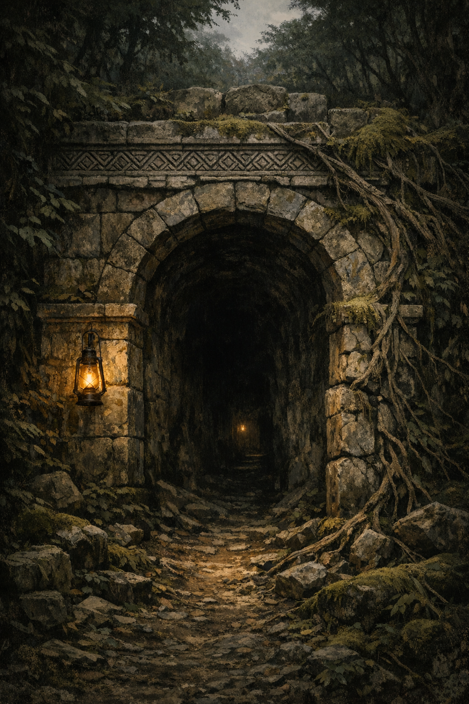

The Hollowback
The Hollowback
The Worst Job on the Board
The Ashford contract had been on the board for six days.
Six days was visible information. The best contracts — the ones with real pay and workable risk — lasted two hours before someone’s handwriting appeared in the margin with a lower price and a shorter delivery date. The mediocre ones lingered through a morning. The Ashford contract had curled slightly at its upper corner from six days of the hiring hall’s dry air, and it was still the only piece of paper on the board with no competing ink.
The hiring hall was a narrow room off Founder’s Street that smelled of chalk dust and old oilcloth. One window, too dirty to be useful. The board ran the full length of the east wall, and most of the contracts pinned to it had the layered handwriting of people undercutting each other in margins too small for the argument. The Ashford contract had no margins written on. Nobody had tried to underbid. Nobody had taken it.
Sela read it twice — once for the facts, once for what the facts implied.
Missing: Ren Ashford, male, nineteen years, medium build, brown hair. Last seen departing Thorngate on the eastern road, carrying cartographer’s satchel. Three weeks past. Sent word he intended to return in ten days. Has not returned. Seeks one to four capable parties for retrieval mission. Fee: twenty-two marks upon signed completion, payable in full on proof of life. Bonus: fifteen marks if completed by month’s end. Contact: Maret Ashford, 14 Copper Lane, warehouse district.
Four lines down was the word she had been expecting: east. The eastern road out of Thorngate only went to one thing worth noting. She had heard of the Hollowback the way you heard of a word in a text you hadn’t read — recurring, unglossed, treated as self-explanatory by people who expected you to already know. The general picture she had assembled was this: old-growth border forest, disputed charter lines, the kind of territory where the crown’s writ technically applied and practically did not. What she did not know yet was whether the Hollowback was dangerous in the way that every dense forest was dangerous, or in some other, more specific way.
She took the contract off the board.
The hiring hall opened onto Founder’s Street. Sela stepped into October air and nearly collided with someone coming fast from the alley between the hiring hall and the rope merchant next door.
He caught himself — caught her, one hand briefly at her elbow for exactly the time it took her satchel to stay on her shoulder. Then he looked at the paper in her hand and then at the paper in his own hand.
Both were Ashford contracts. His was a cleaner copy — no curl at the corner, not torn from the board. The kind of copy made before the contract had been posted publicly, which meant someone had seen it first, had taken their time to think it over, and had decided to let six days pass before committing.
“Interesting,” he said. He was half-a-head taller than her and built for movement — the compact, deliberate efficiency of someone who went a lot of places quickly and quietly. Half-elven by the cast of his features, one pointed ear just visible beneath dark hair that had not been recently attended. He tucked his copy inside his coat as if he’d been meaning to do that anyway. “You took it off the board.”
“Yes.”
“I was going to do that. I was taking the scenic route.”
“Through the alley.”
“Alleys are scenic in their way.” He looked at her satchel, then at her. “You’re a wizard?”
“Apprentice.”
“Certified?”
She reached inside her coat and produced the provisional certification. It was the Church’s standard document for practicing apprentices — signed by her master, listing the four categories of her current reliable work, noting that she was operating within legal scope. It was accurate. It was not the full Academy seal, which was a different document requiring several years and considerably more money than her apprenticeship had cost, and the two were not easily confused.
It said: she could do four things. It did not say what she could not yet do or how far she could push the four things she had before the cost went from manageable to something worse. That part was accurate too, in its silence. She had not mapped that edge. She knew it existed.
He looked at the certification. “Useful,” he said, which seemed to be his general response to information. “I’m Evren Cael. Locks and problems. If we’re both heading to the same address, and we split the—”
“Splitting twenty-two marks does not solve the problem of twenty-two marks,” Sela said.
Evren Cael paused. “That’s fair,” he said. “What if we called it one contract and just both showed up? Only one person’s holding the paper. Cleaner presentation.”
“That’s the same number.”
“But more professional looking.”
She looked at him. He was watching her with the easy attention of someone calibrating — not performing charm, not exactly, but reading the situation to determine what move came next. She put the contract in her satchel.
“14 Copper Lane,” she said, and started walking.
He fell in beside her. After a moment: “This is going well.”
“You’ve said useful twice and explained three things that weren’t helpful.”
“I said useful once.”
“You implied it a second time.”
He considered this for half a block. “I like you,” he said. “That’s an honest assessment, not a tactic.”
She found this funny, which she did not say aloud.
Copper Lane was fifteen minutes through the trade quarter and one left past the customs building, which nobody who worked in the trade district called the customs building. It was called the Toll, everyone paid there eventually, and the joke about the name had been repeated until it stopped being a joke and became a fact about the street. The warehouse numbers ran out of sequence — nine, then fourteen, then thirty-one — and they found the address at the end of a short block with a modest sign above the door in Maret Ashford’s trade name.
A man was already standing at the door.
He was tall, broad-shouldered, with the physical economy of someone trained to be still for long periods and to move from stillness without announcement. He was reading the Ashford contract with the full attention of someone who did not read things twice. Sela put his age at mid-twenties. His coat was heavy canvas, military cut, brown — a brown chosen specifically for not being noticed, she thought, in the way certain shades of practical clothing were selected by people who had professionally needed to not be noticed for years. The collar sat slightly wrong. Not from wear. The fabric at the shoulder seam had been folded deliberately over something, and when the light hit it at the right angle, the faint shape of old stitching showed through the fold.
He looked up. Gray eyes, quick assessment — Evren, then her, then the satchel, the hand she kept near the satchel. Then back to neutral. “You have the contract.”
“I took it off the board,” Sela said.
“Fine.” He looked back at his copy. “The job is to find a missing person. Does the client want proof of life, or is proof of the body an acceptable outcome?”
“The contract says proof of life.”
“Most contracts that say proof of life are written to accept proof of the body as a fallback, in case the retrieval goes long.”
“The contract says her brother left a note saying he’d be back,” Sela said. “I think the intended reading is that she wants him alive.”
He held her gaze for a moment — a quick, professional recalibration. “Then this is a rescue contract, not a recovery contract,” he said. “That’s a different job.”
“That was my read.”
“Good that we have the same one.” He folded his copy and pocketed it. “Corvin Ash.”
“Sela Vane.” She did not immediately add: I’m the wizard. The certification explained what it explained; the conversation about what it didn’t explain could happen when it needed to. “Evren Cael.”
Corvin looked at Evren with the quick, calibrating attention of someone taking a professional inventory. “Armed?”
“Professionally,” Evren said. “Three knives, a short blade, a garrote I’d rather not discuss in front of the warehouse district.”
“I have one more question.”
“The garrote is more of a specialized tool—”
“Did either of you ask at the hiring hall why this contract has been up for six days?”
Sela said: “I asked two people. Both said the Hollowback was fine. Just the old forest.”
Corvin said nothing for a moment. Then: “Both times in the same tone?”
“Yes.”
He nodded once, as though this confirmed something he had already suspected, and turned back to the door. She thought this was approximately the most useful exchange she had had today.
The woman sitting on the crate beside the warehouse door was a dwarf — compact, settled, with the posture of someone who had spent decades making peace with the fact that the world had not been built to her proportions. She was eating an apple with patient attention and held an Ashford contract in her free hand. The contract was folded shut at the page containing the fee; she had read it through, folded it back to that page, and apparently decided something. She was not reading it anymore. She was simply sitting.
Beside her on the crate: a healer’s kit, buckled closed. The buckle was plain metal. The strap was plain leather. The flap had no mark on it at all — no Church seal, no certification emblem, no institutional endorsement of any kind.
“You’re here for the Ashford job,” Sela said.
The woman looked at her, then at Corvin, then at Evren. Then she looked back at the warehouse door. “Yes.”
“Any particular reason?”
A pause. Not uncertain — she was thinking about how much of an answer was necessary. “Someone should go.” She finished the apple and set the core precisely on the corner of the crate. “Agda Stonebrook.”
Evren said: “That was three words.”
Agda Stonebrook looked at him. Not unkindly — the look was the careful inventory of someone filing a new acquaintance accurately. She put him somewhere and reserved further judgment. Evren met this with a smile that was warmer than the one he’d used to negotiate on the street — less calibrating, more genuine.
“Should we go in?” Corvin said.
They went in.
The warehouse smelled like turpentine and old paper. Import stock lined the main floor in organized rows: bolts of cloth, sealed crates stamped with eastern merchant marks, ceramic storage containers packed in sawdust. The office was a partitioned corner at the back, separated by a door hung slightly crooked to fit the partition’s dimensions. It stood ajar.
Maret Ashford was standing when they entered. She had been watching from the window. She was mid-thirties, sharp-featured, dressed for a workday rather than a meeting — practical coat, ink still on her left index finger — and she was holding herself with the careful containment of a person who had been frightened for three weeks and had decided, some time ago, that showing it fully to anyone was not an option she had.
On the desk: a map unrolled under glass weights, and beside it, a letter folded so many times the crease had begun to fray.
There were not enough chairs.
“You’re here about the contract,” Maret said.
“All four of us,” Sela said. “One contract.”
Maret looked at each of them in turn. Whatever the assessment produced, she kept it. Her gaze settled on Sela’s coat, and Sela produced the provisional certification before it could be asked for.
Maret looked at it. The expression that moved across her face was brief — a quick reorganization, expectations adjusting — and then she put it away behind a controlled surface. It was not the seal she had hoped for. Sela understood that.
Sela put the certification away and looked at the map.
The eastern road was drawn in ink, settlements marked at regular intervals: Millhaven, Carters’ Cross, Edgemark, and then the marks stopped and a gap opened where the road entered the forest. Past the gap, Maret had drawn a circle by hand. Inside it: Hollowback forest. East of the circle, where the base map’s detail ran out, there was a small square marked with script Sela did not recognize — old, angular, not any notation style she had seen in three years of apprenticeship study. Ren Ashford had extended the map in pencil past Maret’s circle, in careful strokes, and his extension ended at that square. She did not look at this longer than necessary.
“His name is Ren,” Maret said. “My younger brother. He was apprenticed to Cartographer Dunne on the west road — that ended this past summer. He’s been taking private commissions since. He’s good at the work.” She stopped, started again. “Three weeks ago he went east. He’d sent me a letter a week before that, said he’d found something on an old survey and wanted to check it in person. He said he’d be back in ten days.” She touched the folded letter without picking it up. “He left a note the morning he went. It said: I found something. I’ll be careful. I’ll be back.”
The room was quiet for a moment.
“Description?” Corvin said.
“Medium build. My height — I’m five foot four. Brown hair, he cuts it himself, it’s usually uneven. Brown eyes. He’ll have his cartographer’s satchel — brown leather, double-buckled. He had a belt knife when he left.” Her voice had stayed level throughout. It was costing her. “He’s not a fighter. He’s never been in a real fight that I know of. He’s—” She stopped again. When she continued, her voice had the quality of someone delivering a report about themselves. “He’s stubborn. It’s his worst quality.”
“We’ll bring him back,” Agda said.
Maret took this in. The flat certainty of it — no hedging, no softening — moved across her face and something in her posture eased, slightly, against its will.
“The fee,” Evren said. “Twenty-two marks is not unreasonable as a starting point, but for a three-week-missing retrieval going into unknown forest, the standard rate for work involving extended absence and uncertain terrain is closer to—”
“Evren,” Corvin said.
One word. Evren paused. He looked at Maret’s face — Sela could see the exact moment he did — and he stopped. He had the grace not to pretend he’d been finishing anyway.
Agda had already signed her copy and put it on the desk.
They each signed. Sela wrote her name under Corvin’s, folded her copy, and put it in her satchel. Twenty-two marks was not much. It was also the number that solved the specific problem she had gotten up this morning intending to solve, which was a different calculation than whether the number was fair.
Maret gave them everything she had. The departure note. A copy of the partial map, which she reproduced quickly and with accuracy — she had done this before, for them or for herself, multiple times. She repeated the description and added detail: he stood with his weight on his left foot when he was thinking. He laughed at things that weren’t technically jokes. He had never not come home.
As they were leaving, Maret said: “Tell him—”
She stopped.
“Tell him I got his letter,” she said.
Copper Lane in the early afternoon had its own traffic: crates, handcarts, a man leading a horse with one wrapped hoof, an argument between two cart drivers at the intersection that had reached the witness-gathering stage. The four of them stood outside number fourteen for the space of a breath, and then the conversation happened at approximately the speed of people who all had somewhere to be.
“East gate, first light,” Corvin said. “Light packs. Three days’ food minimum.”
“I can procure additional supplies this afternoon,” Evren said. “Don’t ask specific questions.”
“I’m going to the apothecary to restock,” Agda said. She hoisted the healer’s kit onto her shoulder. “I’ll be at the gate before dawn.”
That appeared to be everything necessary. Agda went one way; Corvin went the other, his attention already moving at a slight diagonal to something in the mid-distance she couldn’t see; Evren fell in behind Sela for half a block, said “this is going well,” and disappeared between two buildings without appearing to have done anything in particular to disappear.
She stood alone on the street.
October light at the late-afternoon angle made the trade district shadows long and turned the alleys between the warehouses into passages that appeared to go on longer than they did. The Ashford contract was in her satchel. The partial map was in her satchel. The departure note that said I found something. I’ll be careful was in Maret Ashford’s desk drawer, folded along a crease that was starting to fray.
At the hiring hall that morning she had asked two people what it was like in the Hollowback, specifically. Both times: oh, it’s fine, it’s just the old forest. Both times in the tone of someone describing the weather on a day when something specific had happened and had not been mentioned.
She went to pack.
East
The east road had a particular kind of person on it at dawn: either very deliberate or very tired.
Evren cataloged the group.
Corvin Ash walked like someone maintaining a map of every threat radius within fifty feet, and had been maintaining this map since the east gate. He didn’t scan — scanning was what people did when they were nervous; Corvin just looked at the road steadily, the way a person looked at something they had already decided about. Every grain cart that came toward them got a glance: wheels, driver, the hands on the reins. He was tracking something specific and had been tracking it since before Evren had finished his second yawn.
Agda Stonebrook’s pack should have been heavier than it looked. Evren had weighed it with his eyes — the healer’s kit alone would account for four or five pounds, and the traveling roll was thick at the top — and then watched her hoist it one-handed and start walking. She was a dwarf and built accordingly, which meant he revised his estimate and accepted that he had no idea what a dwarf found heavy.
Sela Vane was reading the map. Not glancing at it. Reading it — the careful, habitual attention of someone who did not believe a map could be checked too many times, and who had already written notes in the margin. The margin of the map the client had given her. On which she had been writing for, at most, six hours.
“Good morning,” he said.
Nobody said anything.
He committed anyway.
The first four hours of the east road were not the problem. The road was well-traveled through the farming country outside Thorngate — grain carts, a party of merchants going the other direction, a man on a donkey who looked at all of them with equal suspicion. At one point a woman on a mule came from a side track with three chickens in a slatted cage roped to the saddle. She assessed the road ahead, assessed all four of them, and then gave specific and completely accurate directions to the nearest working well, which none of them had asked for. They said thank you. She appeared satisfied and moved on.
“Do you think that’s how she greets everyone,” Evren said, “or were we visibly in need of a well?”
Sela, walking with the map, said: “The waystation isn’t on the map.”
He adjusted his stride to come level with her. “Nothing?”
“There’s a notation.” She angled the map toward him without breaking pace. The annotation was vague — a mark in the outer margin with three characters of angular script that were not quite any notation he had seen on a current map. “Do you know what that says?”
He did know what it said. He had known for three years. He said: “I once heard a cartographer’s description of it.”
He stopped there.
She waited a moment. When nothing else came, she looked back at the road and the map both at once. She did not ask a follow-up question. He was not sure whether this was because she was satisfied or because she had already heard what wasn’t in the answer.
There was a version of Agda Stonebrook, he was certain, who laughed at things. He had placed her in this category based on the specific quality of her silence, which was not hostile — too comfortable for hostility — but which was maintained with a consistency he found professionally impressive. He made three attempts across the morning and got the same result each time.
The third attempt would have worked on almost anyone. It wasn’t his best material — his best material required setup time and at least one prior conversation — but it was good, and it had the timing right and the self-aware delivery that usually bridged whatever gap existed between I’m being charming and you are charmed. Agda received it with the flat expression she received everything, chewed her travel bread, and glanced at the tree line on the eastern side of the road.
He adjusted his theory. Jokes were not the right currency. He would try truth-adjacent material. He had a story about a bridge, a locked door, and a very specific kind of misunderstanding that was entirely true and had never failed to get a response, and the response always made people treat him slightly more carefully afterward. That was the goal, he told himself. Careful treatment. Useful for a working party.
He tried a fourth joke instead.
There was an inn twelve miles out — The Wayward Ox, the sign said, though the painted ox had an expression suggesting it had arrived rather than wandered. One room with four pallets, a fire, and a soup that smelled like the cook had made a decision partway through and continued past the point of reversal.
Agda ate the soup. She had looked at it, smelled it, tilted the bowl fractionally, and apparently determined it would not kill anyone. She ate without comment.
Corvin sat near the fire and took out his knife. He didn’t sharpen it with any urgency — the motion was the kind of routine that fills an evening the way a stopped clock still marks the hour. The scrape of steel on stone said: I am here; I am not here for conversation; I am noticing everything.
Sela asked about road conditions for tomorrow. She addressed it to no one in particular, which meant she addressed it to the group, which meant — somehow — it was Corvin who answered, in eight words: “Same for another three hours, then slower.”
“How much slower?”
“Depends on the carts.”
“You counted carts today?”
He met her eyes. “Three this way past the morning stretch, coming back light. Means the road narrows before the end of the trading day.” He went back to the knife. “It’s what it always means.”
Sela wrote something in the map margin. She wrote it the way she did everything: like it mattered.
Agda had taken off one boot and was examining her heel. There was a blister at the edge of the pad — not serious, Evren had seen worse after the first day of longer travel — and she cut a strip from a piece of cloth, folded it to the right thickness, and set it against the skin. Then she said three words, low and quick. Not quite a prayer. Not quite an instruction. The rhythm of it was the rhythm of someone addressing something that was expected to respond.
Nothing visible happened. But she tied the wrap off with a different quality of attention than she’d tied the rest of her laces, the way you’d close a letter differently if you believed the person receiving it would read every word.
He had heard that register before — not that god, not that cadence specifically, but the shape of a practice: the habit of speaking to something you believed was listening. He didn’t know whether Duhr had answered. It wasn’t his question.
The fire was good. Whatever else you said about The Wayward Ox, the fire was good.
He took first watch, which meant sitting at the door while the road was still lit by a half-moon and the quiet was, for the moment, uninterrupted. Three hours, then Corvin. Nothing to watch for except the quality of the silence.
It was quiet. Good sign.
The bad sign was in his own head.
He had found the survey notes three years ago. They had been in a stack of discarded paper at a cartographer’s office — old, corners browned, written in a hand he had come to know the way you learned a handwriting that crossed your path often enough. The notes described the Eastmark Waystation’s approach road, the configuration of its junction, the stonework of the outer gateway, and then stopped. Mid-page. Mid-sentence. At the point where the survey had apparently not continued.
He had kept them. He had read them until they stopped surprising him. He had been looking for three years for an excuse to follow them east.
Here was the excuse. Sitting in his coat pocket, folded, with Maret Ashford’s name on it.
He looked at Sela’s annotated map on the table inside — she had left it under the lamp, margin notes spreading outward from the original marks into something that would be a different document by morning. Then he looked back at the road.
Empty. Moon adequate. Nothing happening.
He had the survey notes memorized. That was the problem. He could close his eyes and read them, the same hand, the same ink, the same place the sentence stopped. He had been carrying them in his head for three years with the particular attention of someone who has found one piece of something and is still looking for the rest.
He allowed himself to sit with that for the length of time he’d decided was allowed. One look, like you took one look at a thing you’d committed to not thinking about.
Then he stopped.
By morning he would be planning his fifth attempt to make Agda Stonebrook laugh.
The second day, the road changed.
It was fine for the first hour — fine for the second, with the edges beginning to soften where the trees were making their argument for the territory. The farms thinned and then ended. The grain carts were gone. The road ahead was worn and still clearly a road, but the kind of road that had started to remember it didn’t have to be.
Not a cloud — the sky through the canopy was reasonably clear — but the light that came down through it was doing something harder to name than dim. Distances were less legible. The tree line twenty feet off the road was twenty feet away and correct. The tree line at forty feet was further than forty suggested. The perspective was technically accurate and somehow unconvincing.
She was watching the middle distance with the expression she wore when something didn’t have a category yet. She had not said anything about it. This seemed consistent.
Corvin had already adjusted his pace — fractionally slower, calibrated rather than hesitant — and his sightline had shifted toward the deeper canopy. He was tracking the quiet now instead of the traffic, which was different work.
Agda glanced up at the trees and gave a small nod. Not at the group. Not at the road. At the trees, or at something in the trees, or at whatever had changed about the light that she had a name for and none of the rest of them did. She had the look of someone who had recognized something and did not need to explain the recognition.
Evren considered saying something. He thought about what he’d say, and then what she’d do with it, and whether the exchange was worth having.
He walked instead. The trees were old. The light was what it was. They made camp where the road became genuinely narrow — a root-heaved stretch that had been a proper road once and was currently reconsidering.
The Hollowback was still, technically, ahead of them. But the light that had changed this afternoon had not changed back.
Sela consulted the map by lamplight. “Two more days to the waystation,” she said. “Maybe three, depending on terrain.”
“Depending on what the map’s missing,” Evren said.
Nobody disagreed. He hadn’t expected anyone to.
He went quiet. Not strategically — quiet was not in his strategic toolkit. It happened, and he noticed it after approximately ten minutes, which was long enough for Corvin to have shifted position twice and for Sela to have added two more notations and for Agda to have arranged the camp fire without waiting for any assistance from anyone. He could tell by the precise naturalness with which none of them mentioned it.
Agda was across the fire. She had her boot back off — checking the blister wrap, apparently satisfied, refolding the edge. She did not look at him. She was not the kind of person who looked at you to check if you were all right. She was the kind of person who looked at the fire and asked it to tell her if something nearby needed her attention, and apparently it sometimes did.
“The road,” he said, “is quite long.”
Agda did not laugh.
But she looked up. Just for a moment, just over the fire, at him — not the flat assessment she’d used all morning, but something quicker, gone before he could file it accurately.
He put it in the category of things that were nearly as good as the thing you were actually after. Then he let the fire burn.
Dereliction
Three things were wrong before the man appeared in the road.
The first: a cart in the scrub to the right of the track, visible through a gap in the undergrowth where the trail bent east. Old frame, sound wheel-iron, boards still holding their cleats. Someone had placed it there, deliberately and recently — the angle covered the bend. No draft animal. No goods. Just placement.
The second: footprints. The track’s left shoulder held four sets moving east, and two of those sets had peeled away from the others at different intervals. One departed into the scrub roughly where the cart sat. A second departed fifty yards back on the left, where the tree line crowded the road’s edge to within ten feet. The mud was the right consistency for dating. Both sets had moved within the last several hours.
The third: the Hollowback had gone quiet in a way it had not been quiet before.
Yesterday the canopy had done something wrong with distances — forty feet reading further than forty, the depth of the forest harder to trust than the eye expected. That was the forest’s ordinary strangeness, present since the second day and unresolved by evening. This was not the same. This was the quiet that happened when things that had been moving stopped moving on purpose.
Corvin said, “Stop walking.”
He used the voice from seven years of giving orders that he meant. The register was not loud; it was the kind of low and certain that carried exactly as far as it needed to and stopped. The three people behind him stopped. Nobody argued about it.
The man appeared sixty seconds later, coming around the bend from the east.
He was limping. Corvin had him in sight from the moment he cleared the curve and watched him cover the distance. A real injury changed a man’s balance: loaded the good foot, put a fractional hesitation into every weight transfer before the injured side had to take load. The quality of the hesitation was specific. This man’s was not that quality. He was walking with thought behind each step — the careful, managed movement of someone who had decided how he moved, not the involuntary compensation of someone who had no choice.
Forty feet. The scrub was close on both sides.
“Crossbowman in the right side of the scrub,” Corvin said, low. “Near the cart, ten feet back. He’ll wait. A bolt doesn’t need distance.”
He’d watched Evren for two days and knew a few things about him: he was fast, he was quiet by training rather than by nature, and he had the quality of a man who did not need instructions explained to him, only given. Corvin addressed the next part to him specifically:
“The crossbowman is your problem. Before they move, not after.”
No response. Correct response.
In his peripheral sight: Sela, one position back from him. Her left hand was at her side in a position it had been in before — not a gesture, not relaxed, the specific stillness of a hand held ready. She was gauging something. He had seen this twice already in two days. She was making a decision about cost, and he had no better information than she did about whether the cost was worth it.
He did not tell her whether to.
He kept walking. The gap closed. Twenty-five feet.
The limping man’s posture shifted slightly — the fractional straightening of a man who had been performing one thing and was now switching to another.
“Help—” he started.
“Now,” Corvin said.
Evren went right before the last word was finished — the air rearranged itself in the way it did when Evren had decided something, and then the scrub took him. Corvin pulled his sword and turned his full attention to the track.
Two men from the left. Both armed. The first one came in at distance with speed, no patience — the training that had given him aggression and stopped before it gave him judgment. His feet told the story before his arm moved: weight loaded forward off his left hip, that shoulder already rolling into the swing before the arm reached half-extension. He had committed before the decision. Corvin read it, stepped inside the arc, and the blow passed. The man’s own momentum was a resource; Corvin redirected him. The sword arm found a geometry that arms were not meant to find and the man made the sound of someone who had not yet decided whether to fall, and then his knees made the decision for him and he was in the mud with his sword three feet away, arm pressed to his side.
The second man was better.
He’d held back through his partner’s exchange, three seconds of patience that had cost him nothing and gained him the read. He came in level, weight back, a fighter managing the engagement rather than winning it in the first pass. Corvin parried. The exchanges were economical — the man wasn’t reckless, which meant the geometry was tighter, less room for the redirects that had worked on the first one. On the third pass Corvin read the footwork: slight drag on the right side, old hip or knee, two years of repetition in it. He stopped going against the man’s blade and started going against the drag. Four more exchanges, controlled, not rushed, and then the man’s grip tired into the kind of grip that didn’t survive a specific combination, and the sword described a small arc and landed in the mud at three feet.
The man kept both hands open at his sides. He wasn’t going for it.
From the scrub to the right: a hard crack. Not a bowstring — a structural crack, the sound of wood taken to its breaking point by force. The crossbow was not going to be used.
The man from the road had not been watching any of this.
He’d drawn a knife during the exchange and stopped performing the limp entirely — covering ground toward the back of the party with the focused movement of someone who had identified the softer target. Sela was in his line of approach. Her hand was still in the readied position; she had not moved from where she’d stopped. The man covered fifteen feet.
Agda stepped into his path.
She did not reach for anything. She pulled her pack off her shoulder in one arc and swung it at the man with the full extension of the swing, the kit inside loaded and dense and nothing like what he’d planned for. The contact was specific. The sound it made was specific. He sat down in the mud in the posture of someone whose next thirty seconds had just been restructured for him. The knife was two feet from his hand. He appeared to be reconsidering a number of things.
Evren, emerging from the scrub gap with the crossbow in two pieces, crouched briefly over the man he’d put on the ground — checking his breathing. The crossbowman was on his back with one arm wrong, alive.
The sword-man on his left standing with empty hands. The one who’d gone to his knees still in the mud with his arm held carefully. The knife man sitting, not moving toward the knife.
None of them dead. None of them a current problem.
The fifth man had not moved.
He was twenty feet further east along the track — further east than any of the others had been, positioned behind the engagement and slightly elevated on a root-mass that gave him four feet of height and a clear angle on everything. He’d been there before Evren went right. Before the two swords. Before any of it.
He was watching Corvin.
Older than the others. A decade of weather on him — the kind that came from exposure, not from years. A scar along his jaw in a line that ran from below his right ear toward the corner of his mouth: not a single clean blade mark but a wound that had healed over several months, possibly without adequate attention. He had not touched the weapon at his hip. He had no intention of touching the weapon at his hip. He was watching Corvin with the fixed, patient attention of a man who had located something he’d been looking for.
Corvin knew the posture before he knew the face.
He looked at the face for one second. The scar was new since the last time he’d seen this man — two years or so, based on how it had settled. The build was the same. Infantry distribution, the particular set of a man who had carried a pack and a blade for years on end and had not stopped when his service had. He’d been two ranks below Corvin’s grade during the Eastern Rotations, second year of Corvin’s sergeant posting. Reliable enough in drills. Not someone Corvin had known personally. A face that had lived for years in the category of present, functional, no particular note.
His name was Radwick.
There were four feet of mud between Corvin and the three men down. Radwick was twenty feet east on his root-mass, not moving toward his weapon. Corvin waited.
Radwick looked at the men on the ground. He looked at Evren coming out of the scrub with the broken crossbow. He looked at Agda resettling her pack over her shoulders with the expression of someone who had completed a task and was ready to continue. He looked at Sela. His gaze moved with the deliberate economy of a man making certain he had the full scene before he used it.
Then he looked at Corvin.
He said: “Ash.”
He paused one beat.
“I heard you got derelicted.”
Not discharged — everyone knew someone discharged, an uncle who’d left the service early, a cousin who’d decided the army was not for him and gone. Derelicted. The army’s own word, the formal word, the word that appeared on paperwork and meant: this soldier failed in a duty. The word that contained its verdict in its structure.
He let a beat pass.
“Heard the whole story, too.”
Corvin said: “The road’s clear. Walk off it.”
He used the same voice he’d used to stop them forty minutes ago. Low and level, the register that did not ask for agreement.
Radwick held the look. He was running math — the version of the next thirty seconds in which he said the other thing, the version in which Corvin gave him something to work with and he used it, the version in which the three men on the ground were still a resource. He ran them. He arrived at his conclusion.
He tipped his chin toward the men down.
They got up. The one with the bad arm bit down on whatever he’d been going to say. The one who’d been disarmed was already moving. The knife man retrieved himself from the mud without retrieving his knife. They moved west.
Radwick stepped down from the root-mass. He walked west without looking back. The scrub took him. The others went into the scrub ahead of him and the sounds — footfalls, a branch displaced, the faint sound of movement through undergrowth — decreased and then stopped.
Corvin watched the right side of the scrubline. He watched the left. He kept his attention on both for sixty seconds, counting, making certain there was no second approach routing through the deeper canopy. Nothing moved after the initial passage.
He counted to sixty. He put his sword away. He picked up his pack and started east.
Nobody spoke for the first two hundred meters.
The track held single-file through the dense scrub and the late-afternoon light was going fast through the canopy — the Hollowback’s particular quality, the way depth refused to be exactly what it should be and the shapes of things at distance were harder to read than the angles suggested. The ground was soft. It held the party’s footprints in the wet-mud impression that the forest seemed to use for record-keeping.
They were not going to ask right now.
He kept the pace a fraction faster than usual. The ambush position was behind them, the scrubline still close, and two hundred meters of road under them before he’d slow felt like the right interval. Nobody objected.
One person back, which was closer than she’d been standing at the fight’s end. She was breathing with steady regularity — the specific quality of a person managing something, not the breathing of someone still frightened. Both hands at her sides. The left hand was loose now, not in the readied position.
She had held force-push prepared for most of the engagement — he’d tracked the position of her hand through the whole fight — and the hand had never opened. The decision had been: don’t.
The cost was real whether you spent it or not. The headache would be behind her eyes already — the pressure that holding magic put there, regardless of release.
He did not ask.
Two hundred meters. He let the pace fall back to the standard. The evening birds were starting up again in the deep canopy — nothing alarmed, the ambush site far enough behind them that the birds no longer cared. The road to the west held no movement. The road ahead was clear.
Still nobody spoke.
He counted the silence for another fifty meters and then let it alone.
The camp was a flat stretch east of the narrowest section of track, where the tree line pulled back enough on one side to provide clear sightlines in three directions. He’d been carrying this criterion since Day 1. They set up without discussing the arrangement: Agda to the fire, Sela to the map, Evren to the perimeter. Corvin took the ground with his back against a section of root-heaved embankment, road in his sightline, and the knife and whetstone came out.
Steel on stone. He’d been doing this every evening since the east gate and the motion had the quality of a thing that filled the time correctly, hands occupied while the eyes worked.
The fire got going. The stars were coming in through the canopy gaps. The road to the west was invisible.
The party had gone from Corvin has a past he doesn’t speak about to the past has a name and someone else has already heard the version of it. Those were different situations.
He was not going to tell them.
Not tonight. The charge was on his record. Radwick had heard a version of the story, traveled by the informal networks that moved everything among people who’d served together — changed the way things changed when they traveled by word, accumulated detail and shed detail in equal measure until what arrived at a listener’s ear was a shape rather than a fact. He had been carrying it since Thorngate; he intended to continue.
The fire settled lower. Agda was checking her kit with the motion of someone whose inventory was memorized, going through it the same way at the end of every day. She was not looking at him. She had the specific discipline of someone who did not perform concern by looking at people, and he understood this about her, and let the non-look be what it was.
Sela added a notation to the map at the edge of the day’s position — the small precise motion of a habit. Her attention was on the parchment. Whatever she was deciding about the other thing, she was setting it down for later, and he could see the difference between the two kinds of attention.
Evren came back from the perimeter. He sat down near the fire and looked at it for a moment. He ate an apple. He did not make a joke. He would examine it when there was something to do about it. There wasn’t, tonight.
None of them asked.
He counted sixty seconds of fire, sixty of road, sixty of whetstone. The forest around the camp had settled back into its ordinary strange compression — the too-much quiet of a place that remembered being important and had since reconsidered. Not the listening quality from the ambush. Just the Hollowback, running whatever calculations it ran at night.
The knife moved on the stone. The fire burned down.
The quiet behind him was different from the quiet before the ambush. It would still be different in the morning, and on the road after that, and whatever it became in the days ahead was not something he could settle tonight.
He watched the road. He kept the knife moving. He let the fire work.
Aftertaste
The fire needed starting and no one had started it.
That was the kind of observation that required action and nothing else, so Sela gathered wood from the near trees while the light was still good enough to tell dry from wet, and built it the way her master had shown her — kindling in a cone, the larger pieces angled to feed air from underneath — and had it going before anyone suggested she do so. The physical work took exactly as long as it needed to take. Her hands were steady. Her head was not entirely right.
The feeling was familiar in the way that unpleasant things become familiar: a pressure behind her eyes, starting at the inner corners and spreading back toward the temples, and a lightness in the top of her skull that was not dizziness exactly but was adjacent to it. She had held force-push prepared through the entirety of the ambush. Close to six minutes in a state of active readiness — not a background cantrip, not passive awareness, but the specific sustained effort of a spell held at the threshold of release. The headache was what she had bought with that effort. She had known she was buying it. The math had still been worth running.
She stacked the larger pieces and the fire caught properly. She moved back and sat down.
Agda’s process, when she did it, was not like a physician’s process — no particular order, no announced intention. She moved around the camp with her kit open and checked people the way a carpenter checks joints: once, with authority, and then done.
She looked at Corvin’s forearm first. He pushed back his sleeve without being told. The graze from the ambush was shallow — Sela had tracked it happening but hadn’t been certain of the depth until now, watching Agda examine it with two fingers and a brief, unimpressed exhale. She cleaned it with something from the inner pocket. She closed the pocket.
Evren held out his knuckles. There was no visible abrasion from where Sela sat, but Agda looked and gave a short nod — yes, fine — and moved on.
She stopped in front of Sela.
The examination lasted three seconds and no more. Agda was not looking at her hands or her knuckles or anything she could have been examining for a physical reason. The attention was different: the read of a person who had learned to take an impression of the whole before settling on the part.
“You held something,” Agda said.
Not a question.
“I’m fine,” Sela said.
Agda turned back to her kit and produced a small bundle from one of the inner pockets: dried herbs, tied with a bit of cord, thumb-length. She held it out. “Eat this. Drink whatever you have.”
Sela took it. “What is it?”
“Meadow mallow and two other things.” Agda had already moved. “Eat it.”
The bundle tasted like old grass with a bitterness underneath that the old grass failed to cover. She ate it anyway and drank from the water skin. By the time she’d finished both, the pressure behind her eyes had not vanished but had shifted — pulled back to somewhere less immediate, the way a headache sometimes relocated itself without resolving. A reduction. The edges of her thinking cleared a little.
Not eliminated. Reduced.
Evren was cleaning the crossbow.
Or rather, the pieces of it. He’d laid both sections out on his blanket roll with a methodical attention she hadn’t seen from him before — not absent, Evren was never absent, but contained. He was examining the trigger mechanism on the body section, running a thumb along the track where the bolt-groove had worn, and the inspection had the quality of something deliberate rather than habitual. He had decided to keep what remained of it. He was determining what he had.
He hadn’t said anything since they’d made camp. This was different from his ordinary quiet, which was itself different from most people’s ordinary quiet — Evren’s silences had the quality of something held in reserve, an intermission rather than an absence. This one had the weight of things decided against. He had not made a joke since before the ambush had finished resolving.
He had moved to take the crossbowman out before Corvin’s instruction had finished reaching him. She had watched it from behind the readied position she’d held through the whole fight. He had been fast in a way that implied practice — not performed speed, but the specific, economical speed of a person who had done a fast version of this particular thing before. Many times, probably. The question of where and when she set aside to consider later.
She took out the map and added the evening’s annotations at the margin. The camp position. The estimated road length covered. The tree line configuration, which was not coming out right on the first pass, so she redrew it.
Corvin was sitting near the fire with his knife out — steel on stone, same as every evening since the east gate. Same hands. Quiet enough not to compete with the fire.
He was facing the road.
She had noticed this on the first day out of Thorngate: the angle he settled at when he wasn’t using his eyes for anything specific. At The Wayward Ox it had been the door. On the road it was the direction they’d come from. At each camp it was the best available angle on the track. It was not performed vigilance — it was where his body went when his body had a preference. A habit of years, worn into the posture without his awareness of it, probably, or with his awareness and simply past the point of adjusting.
She wrote the camp’s position into the margin and added a small mark for the direction of the road.
The question she was not asking: what he’d done, or what had been done to him, or whether those were the same question or two different ones. Radwick had said I heard the whole story with the confidence of a man who had indeed heard a story. Stories that traveled through informal channels over two years changed. How much the story had changed she had no way to assess.
She asked, without looking up from the map: “Will they come back?”
“No.” He didn’t shift from the road. “They got what they came for and didn’t get it. Going back the same way is the first thing they won’t do.”
One sentence and a half. She believed the assessment. She returned to the map.
It was Evren who brought up the man. Not as an accusation, and not quite as a question either — he set down the trigger mechanism, looked across the fire, and said: “That man knew you.”
Corvin looked at him.
A moment passed. The fire made the sounds fire made.
“Seven years in the Aldenmere infantry,” Corvin said. A pause. “It ended.”
That was the whole explanation.
Evren’s mouth opened.
“Leave it.”
Agda said it without looking up from the cloth she was waxing.
Evren closed his mouth.
Corvin did not look at Agda. Agda did not look at Corvin. The fire continued. Sela moved the annotation line on the map slightly east, where it belonged.
Evren picked the trigger mechanism back up. The camp was quiet.
The others turned in before the fire was fully down. Sela stayed with the map — the kind of task that could occupy her hands while the rest of her was doing something else entirely, which was: sit with the catalog of the past three days and see if there were patterns she’d missed.
There were a few. She added them to the relevant headings and closed the map’s travel case.
Corvin had moved further from the fire. Past the direct circle of light, where the road was visible and the trees weren’t washed out by the glow. Twelve feet, approximately. She was aware of him in the peripheral way she was aware of most things: not looking, but knowing where.
“You held a spell during the fight,” he said.
She did not startle.
“Yes,” she said.
A moment. She set the travel case down.
“You held it back,” he said.
“The fight didn’t need it.” The embers shifted; the light steadied. “Adding a force-push to a situation already resolving correctly would have been cost without purpose.”
She heard him shift position. The scrubline was quiet to the west.
“Good decision,” he said.
She didn’t look up.
Two words.
“Good night,” she said.
He said nothing. She heard him shift in the direction of the road.
She put the map away and lay down.
She didn’t fall asleep immediately.
The forest at night was different from the forest during the day. During the day the Hollowback’s particular wrongness was visual — distances that refused to read correctly, the depth between the trees harder to trust than the angles suggested. At night the visual part was simply absent, and what remained was everything else.
There was a sound of water she couldn’t locate. The sound had been present for two days and she had not yet seen running water — it arrived and departed without fixed source, present in one direction and then, some time later, present in another. There were insects she didn’t know the name of. There were the periodic cracks of the old canopy, wood under its own weight over decades, nothing alarming, just the sound of something very large shifting very slowly in the dark.
The trees were older than the road. Whatever the Vethic Empire had paved through here, the forest had existed before it and was, at whatever pace old forests ran things, becoming what it would be after. She had spent two days on a track that had been a road and was now a memory of a road. The waystation was two more days ahead. Perhaps three.
Three days from Thorngate, with three people she’d known for three days, walking toward a forest station that travelers who knew what they were doing avoided. She held this as a fact — the shape of what she had agreed to, laid out plainly — and found that it did not produce what she might have predicted.
What it produced was something more like: well.
Not resignation. Not confidence exactly.
The headache was still there. Low, now. More presence than pain.
Somewhere in the middle distance a night bird started a sound and another answered. They traded it back and forth for a while and then stopped. The water went on running somewhere invisible. The canopy settled.
The forest sounded different from the scrubland.
She slept.
Charter
The booth was tidier than any border station had a right to be.
Stone walls, a swept step, and in the narrow window box: winter stock, the kind that stayed through frost — white-petaled, small-headed, not planted to look nice but planted because someone here had decided that a kept flower was worth keeping. The gate was timber, heavy-beamed, with hardware on the hinges that had been recently replaced. She could read that in the squareness of the fit, the lack of rust at the joint. Whoever maintained this checkpoint maintained it as a thing that worked, not as a thing that merely stood.
She noticed the booth before she noticed the gate, and the gate before any of the others had said anything. They were still a hundred yards out when she stopped walking.
Behind her, Evren’s footsteps stopped, then Sela’s, then Corvin’s slightly separated because Corvin always walked at the edge of the group.
Ahead: the man stepping out of the booth.
He was stocky even for a hill dwarf — mid-fifties, with the particular set to his shoulders of someone who had stood in exactly this spot for a long time. His beard was short, which was practical. He wore his charter papers in a copper case at his belt, the embossment visible at this distance: crown grant, the standard form. He looked at them for exactly as long as it took him to see what they were.
“Papers,” he said.
The two employees behind him were armed. Crossbow to the right, short sword to the left. Neither had moved to a posture of aggression — they were positioned for cover, spread just enough to make it clear they’d done this before.
Corvin produced the Ashford contract and a travel permit. The charter holder read them, handed them back.
Evren produced his travel papers. She didn’t see which set — Evren had at least three kinds and she had never asked about the distinctions between them. The charter holder read these too and handed them back without visible reaction, which was more informative than visible reaction would have been.
Sela produced her apprentice certification. The charter holder unfolded it, looked at it, looked at Sela, and looked at it again. His expression did not change. He folded one corner of the paper — a small crease, a private notation — and handed it back.
Then he looked at Agda.
She produced her healer’s kit registration from the enclave. No Church seal on the buckle, the strap, or the flap. The registration was from the enclave’s own records, which were meticulous and organized and had never once been accepted as equivalent to a Church document by anyone who had the power to require a Church document. She held it out.
He took it. He handed it back without looking at it.
“Party has an unlicensed healer,” he said. “Surety bond. Four marks against return.” He had already turned toward the booth. “Name’s Vott. Twenty minutes to process—”
“Charter Holder Vott,” Evren said, with the bright, interested attention of a man who had identified something worth arguing about. “I’ve had occasion to study the Crown Charter Statutes — the relevant sections, specifically, concerning public right-of-way — and there’s a provision established under the Third Consolidation that I believe predates your charter grant for this junction by approximately—”
“Eighty years,” Vott said. “Yes.”
“You’ve read it.”
“I have.”
“Then you’ll know the provision establishes a right of public passage that would seem to supersede—”
“The bond requirement stands,” Vott said, “under Section Four of the Charter Enforcement Supplement, adopted eleven years before the Third Consolidation and therefore not superseded by it. You’ve read the statute.” A pause. “Not the supplement.”
There was a silence in which Evren’s expression traveled through several countries and landed on something that was not quite admiration.
“The relevant language in the Supplement,” he said, recovering, “specifies permanently unregistered practitioners. My colleague holds a registration—”
“From a non-Church institution. The Supplement specifies accredited.” Vott’s tone was the tone of a man who had walked this corridor of argument many times and knew exactly where the floor ended. “The Church is accredited. An enclave is not.”
“The definition of accredited in—”
“Is Church-specific. Has been since the Supplement’s passage.”
Evren opened his mouth and found nothing in it. He closed it.
Agda was watching Vott.
She had been watching him through the whole exchange, and what she had been watching was not the argument but the man behind it. He was not corrupt. He was not enjoying this, not particularly. He had answered every citation before Evren had finished making it, because he had made his preparation and he made it well, and he was not going to be moved by cleverness alone. He had probably had some version of this conversation forty times at this gate.
And he was a hill dwarf.
“How long,” Corvin said to Vott, “does processing the bond take.”
“Twenty minutes. Standard terms.”
“We’re on a contracted timeline.”
“So is everyone who comes through this gate,” Vott said. He turned toward the booth.
The calculation on Corvin’s face was readable to her, which was not always the case with Corvin’s face: four marks and twenty minutes against a fight with authorized personnel that they could not win legally and probably couldn’t win physically without consequences nobody needed. She tracked his hand — it had moved toward his sword when the crossbow came up, and it had stopped there, held by the math.
The younger employee was watching Evren. He had been watching him since the argument started, not with the professional neutrality of someone doing a job but with the particular restlessness of someone who had decided that Evren was being disrespectful and that this required a response. She had been tracking his hands for the past ninety seconds.
Evren said something about the Supplement’s enforcement history.
The young employee shoved him.
Not a weapon — a shoulder push, two hands, hard enough that Evren stepped back into the road with his weight going wrong before he caught it. The other employee’s crossbow came up. Corvin’s hand went to his sword hilt and stopped.
She stepped in front of Evren.
The Dwarven came to her the way it had always come when she needed it — not retrieved, just present, the language of the enclave and the tradition that had put her hands in this kit and sent her out into the world with Duhr’s name and an understanding of what thresholds were for.
She named herself first: her clan, Stonebrook, four generations of threshold practitioners, her enclave’s name and affiliation in the tradition. She named Duhr. And then she stated the old right — the one that predated crown charters and Church certification and the Kingdom of Aldenmere itself, the one from the old codes that her training had carried as a legal argument and her grandmother’s training had carried as a fact: the right of a threshold practitioner to walk the border roads in service of the living, acknowledged among dwarven settlements from before the first Aldenmere border had been drawn.
She stated it to Vott. Not as a plea. As what it was.
She could not have said, on a legal question, whether any of this had standing in Aldenmere’s crown law. She knew exactly what it had with Vott, who was a hill dwarf, and who had stood at this gate long enough that some things had become more real to him than any paperwork was.
The pause that followed was long enough.
The young employee had not been listening, or had not understood what language it was, or had decided that whatever had passed between the charter holder and this dwarf woman was not his concern and the half-elf was still his concern. He swung at her.
She turned into it. She knew how to take an impact — the enclave had not sent her out unarmed in that sense — and she turned so the blow caught the thick muscle of her left shoulder rather than the clavicle, because a bruised clavicle was structural and a bruised deltoid was a pain she could work with. The timing was off by a half-second. The impact landed harder than she’d positioned for. The bruise started forming immediately.
She heard the crossbow discharge. The bolt went into the tree line to the right — she heard it hit wood deep in the canopy, not close. The older employee’s weapon was now empty and he knew it.
Corvin pulled the young man backward by the arm and collar, one efficient motion, and held him there without apparent effort.
“Enough,” Vott said.
Two syllables with the whole weight of a man who had used that word before, in that place, and knew exactly what it cost when he used it. His employees stood down. The younger one’s expression had gone somewhere behind his own face.
Vott looked at Agda.
He said, in Dwarven, the formal phrase — the acknowledging response, the old register, three words that the tradition required: I receive the claim.
Then, in common: “Pass.”
She moved her left arm. Full rotation, which was good. Pain on the full extension, which was expected. She started toward the gate.
Corvin had released the young employee and turned to watch the treeline in the direction the bolt had gone. The older employee was reloading without making eye contact with anyone. Evren moved through the gate ahead of her and said something quiet to the young man as he passed — she didn’t catch the words, but Corvin, following, made a sound in his chest that might have been the beginning of a laugh.
Vott said: “Stonebrook.”
She stopped.
He came to stand beside her — not in front of her, beside her, which was the positioning of a conversation he did not want his employees to hear clearly. He spoke in Dwarven, low and deliberate.
He said: there was something in the waystation. He’d watched people make the decision to go in for twenty-two years — surveyors, scholars, Church scouts who’d had a commission he’d never been shown the full papers for, traders who thought the old roads ran through there and were not discouraged by much. Some came back different. Some didn’t come back. He had never gone in himself. He had made that decision early and it had not cost him anything he had later regretted.
He said: he knew what a threshold practitioner was and what Duhr’s tradition held about the lines between the living and the rest of it. And he was telling her specifically because what was in that waystation did not observe the threshold the way that alive things and dead things observed it. It was something else. A threshold practitioner would feel that distinction before anyone else in her party did. Maybe before she was ready to feel it.
He said: be careful.
She looked at him. He was not frightened, which was not the same as not being concerned. He was a man who had held this gate for twenty-two years and who had a clear working model of what lay on the other side of it, and his clear working model had a gap in it that he had chosen not to fill, and he was not going to fill it now, but he was telling her the gap was there.
She said, in the old form, the three words the tradition required when someone of standing offered a threshold warning: she heard him. She thanked him.
He nodded once. He walked back to the booth without turning around.
The others were a dozen yards ahead on the far side of the gate. Sela had the map out. Corvin had turned from the road and was watching her cross. Evren had stopped in the road and was watching her with an expression she did not spend time analyzing.
She kept her left arm moving — a slow rotation, as if loosening a stiff joint, which was not entirely not what she was doing — and sat on a tree root at the road’s edge and pulled her kit open.
“What did he say,” Evren said. He said it without the question’s lift at the end.
“There’s something in the waystation,” she said. “People go in and some come back differently and some don’t come back. He’s never gone in himself.”
“He could have told us that in common,” Evren said.
“He could have.”
A pause.
“He told you specifically,” Evren said. “Not all of us.”
“Yes.”
She palpated the shoulder. Bone intact, muscle taking the impact the way muscle did. She worked through the assessment with both hands, one pressing from the front and one from behind.
“How bad,” Corvin said.
“Not serious.” She said it the way she said what was true — the same flatness for comfortable truths and uncomfortable ones.
Sela was writing something small in the map margin. She had asked no questions.
She said, quietly: Duhr, vel thanis. The short form, the simple ask.
The response was immediate and undramatic, the way Duhr always answered practical requests: warmth in the tissue, deliberate and focused, the presence of attention where she had asked for it. Not power. Not miracle. The threshold between injured and healing, nudged in the direction of healing. The swelling would come down faster than it would have otherwise. The rotation would be clean by tomorrow.
The light shifted. She glanced up.
Evren had produced a small lamp from somewhere — she had not seen him light it, but the afternoon canopy was already the bad kind of dark and the lamp held at the angle he’d chosen put the best light on the muscle she was working. He had positioned himself between her and the direction from which the worst of the canopy shadow fell.
He did not say anything about this. He did not ask if the angle was right. He held the lamp at the angle that was most useful and watched the road ahead, and she worked, and neither of them said anything until she closed the kit and stood up and resettled the pack.
“What did the way he said it mean,” he said. Quietly. Still watching the road ahead.
She looked at the road.
“It means,” she said, “that a man who has watched people go in for twenty-two years is specifically worried about what I’ll encounter when I do.”
Evren was quiet.
“Is that worse than if he’d warned all of us equally,” he said.
“I don’t know yet,” she said. “I think it might be.”
She started walking. He fell into step beside her, not quite at his usual distance — slightly closer. The lamp went back wherever it came from. Corvin and Sela fell in behind.
The trees closed in the way the Hollowback always closed in: not suddenly, not dramatically, just incrementally, each step carrying them fractionally deeper until the gate was no longer visible and the light had the specific quality the Hollowback produced — technically adequate, distances harder to read, the feeling of being watched that came not from anything watching but from the forest’s age and density.
She kept her left arm moving in a slow rotation. The swelling was already less.
Somewhere in the trees: the sound of water with no locatable source.
She walked toward whatever was in there that didn’t respect thresholds the right way. She had Duhr’s name and her healer’s kit and twenty-two years’ worth of a hill dwarf’s considered opinion, and she had not yet decided what she was going to do with any of it.
The road went on. She followed it.
Chapter
6
What the Empire Paved
Two hours past Vott’s gate, the canopy changed.
It happened the way the Hollowback did most of its work: incrementally, and then all at once. There was a point where Sela could have put a pin in the map and written here the light went different. The trees were older than the ones before, or the same age but growing closer, their canopies interlocked overhead into something that let the afternoon through in angled shafts rather than the general filtered gray of the earlier track. The shafts came down in long diagonals and hit the undergrowth at odds with themselves, and the effect was of distance simultaneously compressed and expanded — the Hollowback’s specific disorientation, the one she’d been cataloging since Day 2. Twenty feet was still twenty feet. Forty felt further than forty. Certain things in the undergrowth looked closer than they were and certain things looked farther, and the difference was difficult to catch before you’d already adjusted for it.
She watched Corvin’s stride change: a slight shortening, the heel coming down with a fraction more attention, the walk of a man who had decided the ground might be uneven before the ground had given him a specific reason to decide this. She shortened her own stride without deciding to and kept his pace.
Evren was navigating by something she couldn’t read clearly. He’d mentioned, sometime after midday, that he’d once followed a cartographer’s notes in a forest like this one. He said it the way he said most things that mattered: embedded in a sentence that was mostly about something else, delivered flat and then not returned to. She’d filed it. He moved differently in these older trees — not cautious, exactly, but attentive in a way that was distinct from his usual attentiveness, which was the attentiveness of a man tracking the social geometry of a room. This was something else. An internal compass she didn’t have a name for.
Agda was watching the upper canopy. Every few minutes she’d slow for two or three seconds with her head tipped back, tracking something in the branches she didn’t describe. Whatever she was watching, it was consistent enough to keep watching.
She opened the map and annotated the margin: canopy changes approx. 2 hours east of checkpoint — light quality shifts, undergrowth distance unreliable. Her master had called redundant annotation a failure of confidence. Her master had also never been in the Hollowback.
The track ran south-east for a while and then began to descend — not steeply, barely a slope, more a suggestion of lower ground ahead. She was watching her footing when something changed under her boot.
Not the texture of mud. Not root or embedded river stone. The word that arrived was different and she stopped on it before she’d finished stepping.
She planted her weight and pressed down. Underneath the mud, underneath the root-work and the three centuries of accumulated leaf-fall and whatever the forest floor became when nothing disturbed it long enough: flat. Not incidentally flat, not the flat of a smooth stone worn by water. Geometrically flat. In a way that forest floors were not, in a way that nothing shaped by water or time and left alone was.
She stopped walking.
Behind her: Evren’s footsteps stopped, then Agda’s, then Corvin’s from slightly left — always the edge of the group.
Sela crouched. Pressed her boot toe against the mud and scraped, slowly, until the edge of something came clear. She worked her fingernail into the gap between it and whatever was beside it. The join was tight enough that she couldn’t get the nail in past the quick.
Stone. Not local limestone — the Hollowback’s natural outcroppings tended toward a warm gray with faint orange vein. This was darker and harder, and the surface where the mud had come away was cut flat with a precision that implied a process she couldn’t have described but could recognize as intentional. As designed.
“The road,” Evren said. Quietly, from just behind her. Not a question.
She straightened. Looked east along the track’s descent, then up at the canopy, then at the map, though she already knew what the map would confirm. The Vethic roads had run through this forest before it was this forest, before the empire that built them had stopped. She’d known that. It was in the survey fragments, in the history, in the pencil line on Maret’s map that Ren had extended past his sister’s notation into the blank eastern space. She’d known it as information and had not quite expected it to be here, under her boot, exactly as flat as the day it was laid.
“The forest grew over it,” she said. “Not through it.”
They followed the road east for a quarter mile.
In some places the mud was thin enough that the paving came almost visible — the dark, fitted stone in rows, the joins between each piece so even they read as a single surface at distance. In other places root-work had heaved the paving up, centuries of pressure finding the seams and working them, but never breaking the geometry underneath. She could feel it through her boots even where she couldn’t see it: the flat beneath the uneven, the road insisting on itself below three hundred years of forest floor.
At the crest of a low rise the track curved away from the old road’s surface to avoid a cluster of old growth, and ahead of the curve a long strip of Vethic stone came up where the roots hadn’t reached — clean, or close to clean, moss-covered but level, running toward a gap in the canopy where some large tree had fallen long enough ago that the secondary growth hadn’t closed the opening. The afternoon light came through the gap at a broad angle and hit the rise.
She stopped at the crest without making a decision to stop.
The light fell on the paving stones. And the stones — the moss on the stones, the air a hand’s breadth above the surface of the stones — did something she did not have an immediate word for. Not glow. Not bioluminescence. Not light produced from within. It was the particular effect of old stone releasing warmth: three centuries of heat, accumulated and slow, radiating into the cooler air of a forest afternoon, the differential so slight it was barely there and so consistent it was entirely there — a shimmer, just at the edge of visible, the air above the road’s surface trembling fractionally between colder and warmer.
Like the road was still warm. Like something that wide and that old and that precisely made took a very long time to cool, and three hundred years had not been enough.
She stood on it. Solid under her boots — the road didn’t move, didn’t flex, didn’t give. She looked down the long pale strip toward the light gap and then back along the road’s line into the deep dark where the old canopy closed, and something happened in her chest that she did not have a name for.
The road was built by people who expected it to last. It did. They didn’t.
Nobody made a joke.
That was the first thing she took stock of: Evren, who filled silences with the efficiency of something that had been designed to fill them, was not filling this one. He’d crouched at the near end of the exposed pavement and was running two fingers slowly along the join between stones, both fingers pressing as if testing whether the fit would give. His face had the specific expression she’d come to identify over four days as the one he wore when he was actually present — when there was nothing being performed, because nothing that warranted performance was happening. He was just looking at the join.
Agda had moved to the crest of the rise and stood with her arms at her sides, not touching anything, looking back along the road the direction it must have run before the trees had it — the dark closing of the old canopy, the place where the sightline died.
Corvin had not crouched. He stood on the pavement beside Sela, and after a long moment — the kind of moment that had a texture, that she could feel the edges of — he said, quietly: “Three hundred years.”
And then nothing else.
The road descended from the crest into a section where the root-work had heaved the original drainage channels entirely, and the low ground beyond had filled — not deep water, but enough that the old paving was submerged and the soil on either side had the particular softness of ground that didn’t dry fully. She checked the map. The Vethic road ran in the right direction, but the right direction required that section to be passable, and it was not passable with the afternoon already moving toward evening.
“We go back to the track,” she said.
Nobody argued. They picked their way off the rise and retraced the quarter mile to where the track forked, the road’s surface slipping back under the forest floor as they went. The track rejoined the road’s alignment farther east, shallower, the stone occasional and less spectacular — a surface that asserted itself in flashes and then went under again. She made a note of where it surfaced and where it didn’t, correlating it to the map’s existing annotations.
The track doubled back once without apparent reason, running northwest for a stretch before correcting northeast. She noted that too. It was the kind of thing that ate time, the Hollowback’s specific discourtesy.
Evren came up alongside her. At intervals since mid-morning he’d moved to a position adjacent rather than behind, which was not his usual arrangement in the group’s loose formation. She’d attributed the first shift to the track’s topography. She’d stopped attributing it and started simply noting it.
He walked without saying anything for a while. Long enough that she’d stopped expecting him to say anything.
“The cartographer I mentioned,” he said.
She waited.
“She said the road would still be there.”
The pronoun landed with a specific weight.
“She was right,” Sela said.
“Yes.”
He moved back to his position behind and slightly right sometime after that.
The campsite Corvin chose was in a hollow where a large tree had come down, opening a gap in the understory long enough ago that the ground was firm rather than churned. Good sightlines northwest and east, the direction they’d come from and the direction they were heading. The unlocatable water sound was present to the south, which made it slightly more locatable than usual, which didn’t mean she’d find it.
Agda built the fire. She did it with the economy of someone who had done this alone before — the sequence of kindling and feed arranged without discussion, committed to a configuration before she’d finished assessing the materials. Not a fire for company. A fire that would hold its temperature and be manageable, built without ceremony and without waste.
Sela ate, and read.
The fragments Maret had given her occupied three pages in Ren’s handwriting — passed across the desk in the warehouse office with the air of something being surrendered that had been kept private. They were not a narrative. Survey observations, measurements rendered in Vethic notation with a student’s hand — confident in some marks and working through uncertainty in others — and a sketch of what might be the outer gateway configuration, the proportions slightly off but the orientation clear. She’d been reading them since Thorngate. She still couldn’t read the Vethic notation fluently, but she could see the logic of the system, the grammar of it, a notation built for precision and speed by people for whom precision and speed had mattered.
She put the pages away.
Across the fire, Evren had produced the two pieces of the broken crossbow and was working through some adjustment to the trigger mechanism she couldn’t see clearly from her angle. She’d stopped tracking this as strange — it was simply something he did in the evenings now, the way Corvin sharpened his knife, a settling-in behavior. Agda was waxing a section of her kit’s leather strap, the cloth moving in the same small repetitive arc, her attention somewhere that wasn’t the camp.
Corvin had taken up his watch position: a tree at the camp’s northeast edge with a clear angle on the track. The knife sound, steel on stone, started and stopped at intervals. Background information. Present and useful.
She slept.
In the dark, she woke.
Not to a sound. To the end of a sound — the particular quality of air after something has moved through it, the way stillness returns to itself slightly wrong when something has just left. She lay without moving and read the forest.
The fire had banked to coals. The temperature had dropped. Someone had taken watch; she hadn’t been woken for the change, which meant it was somewhere past midnight, deep enough into the night that whoever was watching had made the call to let her sleep. She made a note of it and did not move.
East of the camp, at the edge of the flat ground where the understory began: a sound.
Not the movement of something large. Animals in the Hollowback moved in ways she’d been cataloging: the crashing scale of something bigger than the undergrowth, or the long cautious pause of something that had caught a scent and stopped. The wood settling — the old trees made that sound under their own weight, long slow cracks in the cold that traveled differently than anything alive. The unlocatable water. She had sounds sorted.
This was not sorted.
It was the sound of something moving carefully. Step by deliberate step, each placement chosen, the movement of something that knew it was near a camp and was making decisions about its feet accordingly. It came from one direction and then stopped. Not because it had moved out of range. Because it had stopped.
She lay still. The coals gave a faint orange light that reached nowhere useful.
The Hollowback made sounds. She knew this. The water carried other sounds across distance in unpredictable ways, the forest was old enough that its own shifts and settlings mimicked things she didn’t want to name. She knew these things.
She lay in the dark and listened to the stillness coming back to itself and told herself: an animal. Something that hunts carefully, that pauses when it catches a camp’s edge. Something with an instinct for caution that read, from here, like intention.
She almost believed it.
The sound didn’t return. She lay awake for a while listening to it not returning, and after a while the Hollowback settled into its ordinary background of water and old wood, and she slept again.
In the morning she wrote nothing in the map margin about the sound.
Chapter
7
Watch
The fire was coals. Not even particularly good coals — the kind that had done their work and were now doing the slow second work of becoming ash. There was enough red in them to be company. There was not enough to see past the tree line.
Evren sat with his back against a birch he’d tested for loose bark before committing to it, because loose bark makes sound and sound on watch is information the watch has just handed over. The others were asleep. Agda had her back to a different tree; Sela had her cloak tucked up around her ears in the configuration she’d arrived at on Day 2 that looked uncomfortable and apparently wasn’t; Corvin was lying with the purposeful stillness of someone who could be vertical in two seconds. Four and a half feet from Evren’s knife hand to Corvin’s left elbow. He’d measured it when he sat down.
He always measured it. He measured the distance from his knife hand to the nearest ally the way he measured the distance to every exit. The same way he’d been sitting with his back to a tree where he could see in three directions since the second night on the road — back always to something solid, the angles covered, the camp’s approach in his sightline. The same way Corvin always took the position nearest the door or nearest the track.
The Hollowback at night was not quiet. That was the first thing a person got wrong, and Evren had gotten it wrong himself, once, when he was considerably younger and more willing to name the dark as an absence rather than a presence of different things. Water, east of the camp — the same unlocatable run of it that had been there since they passed through Vott’s gate — flowing over something or around something at a pitch that said it was not slow. The trees settling: old wood under its own weight, the long low creak of something not in distress but large, the sound of very old things being very old. Night birds trading calls across the canopy in the particular rhythmic delay that meant they were far away and attending to each other. A boar west of them, going away, until it was past the camp’s radius.
He had the Hollowback’s night register down now. Three days of data, which was not a word he used out loud, but which was accurate.
Which was why he was thinking about Lira.
She’d said: the oldest forests hold the sounds differently than the scrubland — the distances shift, you have to recalibrate. The second night he’d walked point, two years before the Ashford contract, in a situation that was not this one but had been instructive. He’d said something facetious. She’d kept reading her notes without looking up. He had recalibrated.
The survey notes had been in a stack of discarded paper in the back of a cartographer’s office on Medway Lane. Three years ago, two months after she’d stopped being reachable. He’d been in the back of the office because the front of the office had nothing useful, and he found most things he needed by not being where anyone expected him to be. The notes had had corners browned with age and had stopped mid-page mid-sentence. He’d read them in the alley. By the time he got back to his room he had them memorized — the approach road, the junction configuration, the outer gateway stonework, and then the sentence that ended in the middle of a measurement and didn’t start again.
She had gone to the waystation to verify the survey. She had not come back.
He was here to find out why. The Ashford contract had given him a path inside without requiring him to explain his reasons, which had been convenient enough that he’d been briefly suspicious of the convenience. The convenience had held. Four days in, twenty kilometers out, apparently exactly where the survey notes said it would be.
He had not told the party this. He had been doing the inventory on whether to tell the party since Day 1, and the inventory was getting harder to justify in either direction. In one direction: he had a personal reason for being in this specific ruin, he had information about the waystation he hadn’t shared, and the not-sharing was beginning to feel like lying by arrangement. In the other direction: Corvin saw things he didn’t want seen and kept them to himself, which was a kind of courtesy Evren recognized and hadn’t expected to receive. Sela was filing things she hadn’t asked about, which was a different kind of courtesy. And Agda—
The coals shifted. A small sound. Nothing alarming.
He had been thinking about Agda a lot, on watch. He was choosing not to look at it directly, the way you chose not to look at a light source when you needed to keep your night vision.
The sound came from east-northeast.
Not the boar. Not the water. Not the long settling of old wood. It was weight-bearing and deliberate — the rhythm of something placing each foot, the movement of something that knew it was near a camp and was making choices about its steps accordingly. It came from where the firelight gave up and the understory began to matter, and it stopped.
His hand was on his knife before he’d processed that his hand was on his knife.
He waited. Counted: one to twenty, then again. The forest went on being the forest around the not-sound where the thing had been — the water, the canopy birds, the distant wood creak. He sat with the knife against his palm and tracked the direction — east-northeast, no farther than thirty meters — and held it, and at five minutes the silence had settled back into the regular kind.
He let go of the knife. He did not look away from east-northeast.
The same thing Sela had woken to. He knew it from the way she hadn’t mentioned it at morning, which was the same way he wouldn’t mention it: the sound had stopped, the forest had gone on. You said nothing because saying it gave it a weight it might not have earned. You noted the bearing and kept watching.
He noted the bearing and kept watching.
Agda woke sometime in the small hours that had no particular hour to them, just the quality of the night at its most resolved. She came up from sleep the way she did everything else: without preamble, the transition from lying down to sitting upright in one motion, like someone had said her name at the threshold of her hearing and she’d answered.
She looked at him.
He had been about to make a joke. He did not make the joke.
In the dark, at this distance, with only coals for light, she should not have been able to read his face clearly. She was reading it anyway. This had been happening since Day 1 and was not becoming less unsettling with repetition.
She got up. Came to sit near the coals — close enough that a conversation wouldn’t require raising voices, not close enough to be asking for one. She picked up a stick and adjusted something in the coals, and a thin warmth came back from the red beneath.
The forest went on.
“You know more about where we’re going,” Agda said, “than you’ve said.”
Delivered with the same flatness she delivered everything she was certain of — no edge, no and, no pressure underneath. A statement, arrived at fully formed from some process he hadn’t been shown, set between them on the ground like a tool she’d decided to put down.
He had the deflection ready. Standard inventory — two or three options, all functional, deployable in under a second. He could feel their shapes from here.
She was watching him have the deflection ready.
He put it down.
“Some,” he said.
She nodded once. She looked at the coals. She did not follow up with anything.
Any of six natural directions from here; he’d have had to work against all of them. She’d chosen not to, and the choice was visible. He had received trust in his life. He had generally found it alarming.
This was more alarming than most.
They sat by the fire.
He did not make a single joke. Agda was a different category. She simply sat there, not asking for anything, not performing patience, and the jokes, which were usually available in a constant ambient way like background weather, were not available.
Twenty minutes. He would have said fifteen if anyone asked.
At some point Agda’s breathing went long and even — the depth of someone asleep — and she was still upright where she’d been, head tipped slightly forward, eyes closed. He had heard at some point that dwarves could do this. He had several questions, but they would keep.
He watched the three directions. The water ran east of them.
He sat for another hour with something he didn’t have a word for and would greatly prefer not to examine, and the warmth from the coals came to him, and the night went on.
The sky went from black to the gray that came before the gray that came before dawn. He had learned to read these distinctions years ago for reasons he no longer remembered, and he’d retained them the way he retained most things that might someday be useful: involuntarily.
He woke Corvin first. Two fingers on the shoulder; Corvin was upright in a second. No words needed. Corvin had the watch assessed and taken before Evren had fully stood, which was the thing about Corvin — operational before awake, or possibly never not operational, it was difficult to determine.
Agda woke herself. The others were coming up from sleep in the ordinary sequence. Sela had that look she got in the first few minutes of consciousness, the one that resolved in about four minutes into her standard expression as if a process were completing.
Evren walked the perimeter.
He did this every morning. Half habit, half the professional opinion that things you didn’t check were the things that bit you. A loose circuit of the camp’s edge: northwest, east, south, back. He’d been doing it since the first camp; nobody had commented.
He was twenty meters into the trees on the northeast side when he found it.
The wrapping was Thorngate. Not a guess — the cord around it was the two-ply that Thorngate traders used when buying from Millhaven provisioners, the short knotted end he’d seen in a hundred market stalls. The oilcloth had the slight yellow tint of Millhaven rendering that made its way to Thorngate by the yard. Three weeks, give or take; the cord had gone soft with moisture but the oilcloth had kept its integrity. Whatever food had been in it was long gone without the packaging having been pulled apart by anything looking. Someone had eaten their provisions here and left the wrapping. Someone who knew how to leave a site.
Four stones in a cairn beside a root, flat-faced and balanced, each one chosen for the flatness of its face and stacked with a precision that wasn’t accident. A bearing marker, provisional, left by someone who knew they were coming back or who wanted the heading available on the return.
He straightened and found the birch.
White bark, at eye height — the only kind of tree you used for this, because the color held the mark. The notation was cut shallow, still pale at the cut edges, which put it at three weeks and no more. The instrument had been a belt knife rather than a surveyor’s blade; the line thickness went uneven at the joints in the specific way of someone who knew the system and didn’t have the right tool.
He read it.
A bearing marker. Eastern heading, corrected for the magnetic deviation the Vethic engineers had surveyed and noted in this section of the forest — a degree and a half north if you didn’t account for it, which would put you at the wrong section of the waystation’s approach road and cost you time you might not have. Ren had known to account for it. Ren had been confirming his heading here three weeks ago, leaving a reference he might want on the return.
The bearing was the same correction Evren had been running in his own head since they’d passed the deviation zone the previous afternoon. He had not mentioned the deviation zone.
He looked up.
Sela was watching him. Corvin had moved slightly left — he’d been watching and had looked away before Evren turned, which was, actually, worse. Agda had gone still near the fire.
Four seconds. He had not paused at the script. He had not sounded it out or worked through its logic; he had read it with the immediacy of his own language.
“Old cartographer’s trick,” he said. “You pick it up.”
Sela said nothing. She had the expression she used when she’d filed something and was not commenting on it.
He had never once picked up anything from a cartographer. He had learned Vethic survey notation because Lira had taught him — letter by letter, across the back of a survey sheet she’d been about to discard, two years before the Ashford contract. She had said: you’ll want this if you ever follow someone’s notes into the field.
He had said something in response. He didn’t remember what. She’d kept working. He’d had the system memorized by afternoon.
“We’re close,” he said.
“A day,” Corvin said.
“Less, if the track holds.”
Nobody argued. Agda handed him something hot in a camp cup without being asked, without comment, and he wrapped his hands around it and watched the light come up through the old canopy in the pale angled way the Hollowback had for morning, and Ren’s four stones sat in their precise stack in the root-mulch, and the notation was right there in the birch bark, and the bearing was correct.
Day 5.
Chapter
8
The Antechamber
The track gave out three hours after dawn.
Not the way tracks usually gave out — a washed section, a fork where neither option had seen use, the creep of understory across something that had once been navigable. It gave out the way a track gave out when it had never been meant to be walked back: the pressure of use, the inches of compressed earth that told the ground something passed here regularly, was simply gone. They were past the edge of anyone with a reason to return.
Sela checked the map. She had checked it six times since camp, adding nothing — the map’s resolution had given out before the track did, and she had moved to the working notes three miles ago, to Ren’s three pages of survey observations and the careful astronomical notations in the margins. She cross-referenced the bearing against the correction she had been running independently: 1.5 degrees north, the Vethic engineers’ documented deviation for this section of the Hollowback, which matched the correction Evren had been running without comment since yesterday afternoon.
She had added this to the list of things she knew about Evren that he hadn’t told her.
The list had grown to require its own accounting.
The Hollowback this morning was a continuous flat grey, the canopy a sealed sheet of cloud-filtered light with no direction to it, no angle, no shadow. The kind of light that made it impossible to know the time by feel and forced you back to knowledge. She knew it was mid-morning. She could not feel it.
Corvin had been three steps ahead since they broke camp, not rushed but operating at the pace efficiency produced — the pace of a person who had already committed to the destination and was waiting for the rest of them to agree. Agda walked in the middle, her kit settling with each step in the familiar soft sound of good packing. Evren was behind and slightly right, in the position that was his now by a kind of informal consensus nobody had established: audible to her only as a particular quality of quiet, the movement of someone who was good at not being tracked by movement.
Then the smell reached them.
Cool, metallic, dry — coming from the undergrowth ahead in a thin column. Not decay. Not water. The smell of enclosed space that had been sealed long enough for the air inside it to stop being the same air as the world outside: the smell of three centuries, preserved. She had encountered something like it once, in the stone cellar beneath her master’s practice rooms, where things were stored and the cold had not changed in living memory. At twelve, she had found it deeply unpleasant. At seventeen, in the Hollowback on the fifth day of a job she had been reconsidering since the first day, she found it specific — which was different from unpleasant, and in some ways worse.
The foundation stones came up through the root-work before the structure did.
She had the sketch from Ren’s working notes fixed in her head: the outer gateway proportions, the orientation, the rough relationship of the northeast corner to the entry stairwell. The sketch was slightly off in its lateral proportions — Ren had been working from notes taken at an angle, and he was good but not precise with distance estimation across a field of broken ground — but the orientation was correct. The sketch resolved into the physical fact with a small correction she absorbed without slowing.
The upper structure was mostly gone. Three centuries of the forest’s patient work: not violence, just time, the incremental leverage of root and frost and water finding channels through mortar until the mortar stopped being relevant and gravity finished the argument. The stone itself was everywhere — settled into the root-work, collapsed inward on itself, some blocks partially submerged in accumulated leaf soil. One section of the north wall, perhaps four meters of it, was still standing at two-thirds height, the courses intact.
She looked at the joins. Close-set Vethic stonework: darker and denser than local limestone, set with a precision that had outlasted the civilization that produced it. The same material as the road they’d found yesterday, the same geometry, the same fundamental indifference to three hundred years of weather. The joins were still tight. She tried a fingernail at the nearest one; it stopped at the quick.
The lower level entrance was in the northeast corner, where Ren’s sketch had placed it. The ground around it was disturbed: soil turned up in the way that happened when something blocking a space was removed by hand. Ren had cleared the entry to get down. She could see the geometry of the original stairwell under the disturbed earth — a shallow angle, a descent, and at the top the lintel was intact, a single long course of Vethic stone sitting exactly where it had been placed three centuries ago.
The smell was coming from below the stairwell, much stronger here. Cold and dry and metallic. Preserved.
“Someone dug this out,” Corvin said. He was at the stair head, looking at the degree of soil resettlement.
Three weeks, approximately. The earth had been returning to its position slowly, as earth did.
Agda crouched at the edge and looked at the descent angle. “Narrow.”
“One at a time.” Corvin confirmed his sword cleared the scabbard — a habitual check, worn into the motion — and went down.
She should have said something. Evren handles traps was the argument, fully formed and available, and Corvin was already four steps into the stairwell. His shoulders nearly filled the width of it. The cold air was coming up past him, disturbed by his passage, carrying the metallic preservation smell with it.
She went second.
Sixteen steps. She counted them. The stairwell was close enough on both sides that she kept her arms slightly forward rather than at her sides, and the stone was cold where her fingers grazed it. She called her cantrip at the entry — the lowest sustainable draw, cupped and aimed downward — and the light it produced revealed something she had read about but not expected to encounter in practice: the Vethic construction compound incorporated materials that caused it to absorb and diffuse artificial light in a specific way. The corridor looked underwater. A slight blue cast, light reaching the walls and not returning cleanly, softening into diffusion rather than reflection. She had read a description of this effect in a treatise on Vethic engineering materials. The treatise had not been overstating.
The temperature dropped as she descended. By the sixth step it was perceptible. By the bottom it was ten degrees cooler than the forest floor, and the air had the quality of something that had not been moved in a very long time.
Corvin was at the bottom, positioned left to give her room. Agda came down behind her, kit settling. Then Evren — she could not hear him descend until he was at the bottom, which was technically a feat in a stone stairwell.
The corridor was short. At the far end: the antechamber.
The chalk marks were on the lintel of the chamber entry.
Pale against stone, thin — the way chalk went in dry preserved air, not faded by moisture, just worn by time. She was working out the logic of the first character when Evren stepped past her and read it.
Not sounded it out. Not paused to work through the symbol system. Read it, the way she read words in her own language — comprehension arriving before process, faster than analysis.
“Second step, left edge, safe.” He moved his small lamp along the lintel. He had produced it from a coat pocket when she lit the cantrip, flame turned low. “Below that: turn left immediately on entry.”
Three seconds. Four at the outside.
She had watched him read Ren’s birch-tree notation that morning in the same way — four seconds, no hesitation, comprehension before effort. She was building a taxonomy of things Evren Cael knew about Vethic notation that he had not explained, and the taxonomy was becoming particular.
The second step was raised at its left edge by two or three millimeters — not enough to catch a foot in ordinary movement, enough to locate the trigger threshold precisely. The center third of the step was the trigger zone, which put the left edge at twelve clear inches of clearance.
“There’s a mark on the left wall,” Evren said. “Path marks. I need to read them from inside.”
He went in: left edge of the second step, sharp left on entry, and the chamber opened beyond him.
Five meters by ten meters. A rectangular space with a grid of pressure plates covering the full floor — she could see the joins from the threshold, the places where the joins were faintly different from the inert stone around them, dust disturbed by centuries of differential load. Active plates, eight or nine in the field. The marks on the left wall were chalk again, the same hand.
Evren was at the left wall. Reading. She watched him track through the marks with the same fluency.
He crossed the field and arrived at the far side, beside Agda and Corvin.
“Nine-square path,” he said, from across the chamber. “I’ll call each one. I’ll be right in front of you, Sela — stay one square behind. Everyone else: Agda first, then Corvin.”
Agda went. Evren called each square, and Agda put her feet with the flat accuracy of someone whose weight demanded precision from each placement. She moved through the field without pausing, and nothing moved.
Corvin crossed in the time it would have taken her to cross half of it. Long stride, economical, each square met exactly.
“Sela,” Evren said. He positioned himself just inside the field, one square ahead of where she would start.
She had been watching the path long enough to have it in her head — five mental passes through it — and still the physical fact of standing at the entry of an active pressure-plate chamber was different from the mental fact. The floor looked like a floor. The active plates were visible only as the faintest discoloration.
She went.
Evren called each square as he moved to it, one ahead of her, and she followed. One. Two. She was aware of the difference between a plate and a stone — the fractional resilience of a loaded mechanism versus the inert solidity of the floor — in the way you became aware of distinctions you were counting on. Three. Four. Five. Six. The far wall was close. Evren was one square ahead, close enough to reach.
Seven.
Her foot came down and the plate gave.
Not much — a millimeter of shift, the difference between static and loaded — but her body knew it before her mind had named what it was, the way you knew ice under a foot before you had decided to know it, and she was already lifting when Evren’s hand was on her sleeve, the grip hard and immediate at the elbow, pulling her forward and left. She was on square eight before she had made the decision to be.
The trap fired.
A concussive percussion — not a blade, not a drop, a compression of air she felt in her sternum and her back teeth at the same instant. The crack of it. Then the impact sound of a chip of wall stone, left wall above the plate, knocked free by the pressure wave and hitting the far wall with a flat hammer-strike.
She was on nine. She stepped through to the floor beyond the field. Her ears were ringing — a clean high tone, equal in both ears, resolving.
Evren stepped through behind her.
“Ears,” he said.
“Resolving,” she said.
“Good.” He was already looking at the door.
Iron, three centuries old — and the mechanism on its face still moved: three concentric rings, each marked around its circumference with Vethic notation, rotating independently on a central spindle. Mathematical notation: she could parse the arithmetic structure of it without reading the specific characters, the way she could follow an argument’s logic in a language she didn’t speak.
Ren had scratched the solution into the door frame. Left side, then right, then below — a sequence in Vethic notation, cut with a belt knife, the line pressure going uneven at the joints in the specific way a belt knife produced rather than a surveyor’s blade. He had worked it out and left it visible. She did not know if he had expected someone to follow or if he had left it as a record for himself, the same documentation habit she recognized from his working notes.
She suspected both.
Evren read the sequence aloud, all of it, one position at a time, the notation falling from him in the same fluent way everything else had. She listened and tracked the arithmetic structure — astronomical reference points translated to ring positions, a date-cycle correction, the logic of it clear once she heard it spoken — and by the time he finished she had the shape held.
“I’ll read each position back to you as we go,” she said. “You turn.”
Evren considered this for less than a second and moved to the rings.
She called the first position. He turned the first ring until the notation aligned with the reference notch, and the mechanism produced a faint internal sound — something settling into place. She called the second. He turned. The rings moved with the patience of engineered things doing what they were built to do, a patience that was indistinguishable from complete indifference to the fact that three centuries had passed.
Third position: a sound deeper inside the mechanism, something aligning further in. Fourth. Fifth. She was holding the sequence the way she held a spell — the same category of attention, the same specific cost of sustained precision under conditions that preferred imprecision.
Sixth position.
She felt the vibration in the floor before she identified what it was.
Low, harmonic, specific. Not the mechanism — not this mechanism, not this sound. Something else in the room, awake now, a pressure in the air that shifted by a fraction she felt in the back of her sinuses and along her forearms. The room had a secondary trap. Calibrated to active magic signatures, because everything in this antechamber was calibrated to something, and her cantrip had been active since the stairwell.
Four seconds. The vibration’s character communicated the window in the way that urgency communicated itself before language — a ramp, an escalation threshold, a margin that was not generous.
She dropped the cantrip.
Complete darkness.
Not the darkness of a clouded night or a shuttered room. The darkness of twenty feet of sealed stone above her and no light source that had ever been in this chamber except what she had brought and had now removed. She could not see Evren a foot to her right. She could not see the floor. The space contained nothing light could travel from.
She could hear his hands on the rings.
That was all. His hands, metal on metal, the slight sound of the ring surfaces on the spindle as he rotated the next position. He was still working. He had not stopped. In the dark, he had found the next position by touch and memory, and the ring had turned, and the mechanism had advanced.
She counted.
Seven. She tracked the ring sounds — rotation, the brief pause of finding the notch, the setting — and matched the count against the sequence still held in her head. Four positions remaining. Eight. The vibration in the floor was present and stable. She breathed. She did not move. She counted.
Nine.
Ten.
The vibration stopped.
Clean, without the gradual fade of mechanical things — there, and then not there, a complete cessation, the way a held breath releases. The room went back to the ordinary sounds of old stone and two people breathing and the cold air.
“Complete?” she said.
“Complete,” Evren said.
The eleventh position. She heard the ring turn, heard the notch set, heard the interval close. And then: the mechanism concluded. Not a click — something structural, the sound of parts returning to a configuration they had been waiting three hundred years to resume. Old counterweights shifting. A bolt retracting at a torque the mechanism had stored and stored and now released.
The door moved inward on a center pivot, slow and absolutely silent, opening a passage into the air beyond.
The air from the passage was cooler than the antechamber, older. She felt it move across her face.
She re-cast the cantrip.
The cost arrived before the light: a pressure behind her right eye, immediate and specific. Not the general after-spell diffusion — the located pressure of a second draw from the same source, the body’s accounting made physical. She gave it its location and the light came up, blue-diffuse in the Vethic stone, illuminating the door’s open pivot and the passage beyond.
Evren had his hands still on the last ring. He was looking at the passage.
“Good,” Corvin said, somewhere behind them in the dark.
The passage beyond the iron door was eight meters: ceiling lower by two courses from the antechamber’s height, walls close enough that she could touch both by reaching. The stonework was as intact as everything else, the same close-joined Vethic precision, the same indifferent endurance.
In the middle of the passage, on the right wall: Ren’s marks. She read the motion indicator without needing translation. Below it, a diagram — a ceiling section, a filled circle indicating the trigger position at floor level on the left side.
“Weight trigger,” she said. “Center-left. Move fast, don’t stop.”
Nobody asked questions.
Corvin went first at the pace that was efficient without being a run. Agda went next. Sela followed at the speed she calculated for a trigger that rewarded pace over caution — faster than careful, slower than the rate that produced errors in close stonework.
She was through before she’d finished the calculation.
Behind her, the ceiling groaned.
She turned.
Agda was still in the passage.
She was not running. She was walking — with deliberate urgency, the pace of someone who had made a specific decision not to run. Not because she didn’t understand the trigger, not because she wasn’t paying attention to the sound above her. She had done the arithmetic about running in a narrow stone corridor while carrying forty pounds of packed healer’s kit, and she had arrived at an answer, and the answer was brisk walk. Each footfall placed. Arms at her sides. The kit not swinging.
The ceiling section above the trigger zone descended two centimeters.
A block of stone, the near-full width of the passage, shifting on its housing as the mechanism engaged — and then Agda stepped past the trigger zone, and the mechanism reached equilibrium with the block twelve centimeters lower than the Vethic architects had placed it, and stopped.
Not falling. Not held by some additional mechanism. Simply complete: the stone had moved as far as the current state of its housing allowed, and it had found its equilibrium there, and it was staying.
Evren came through. He looked at the block.
“Don’t run in tight stone passages,” Agda said, to no one in particular.
“I wasn’t going to say anything,” Evren said.
“You were building up to it.”
He looked at the block again. “Noted.”
The lower-level corridor.
Vaulted ceiling, three meters above the floor, the arch describing a geometry she had seen in two drawings in her master’s library and in no physical structure before now. The vault’s curve caught her cantrip and spread it differently than a flat ceiling would have — more even, the shadows falling in the places the geometry intended. The floor was the preservation dust of three centuries: an undisturbed coating, flat and even, recording their footsteps as they entered with the patience of something that had not been asked to do anything for a very long time.
Cold. Dry. The metallic preservation smell was ambient here, no longer a column coming from below — this was the air itself. The air of something sealed and waiting.
The headache behind her right eye was present: the fixed cost of the second cantrip draw, localized and stable. Her remaining spells were untouched. She was not fresh, but she was not spent.
She did not say this aloud.
Corvin had taken the lead position by the simple mechanism of being first through and continuing forward. His hand was not on his sword, but the posture that preceded the hand-on-sword was present — the slight tightening at the eyes, the reduction of ambient movement, the stillness of active calculation. He was reading the corridor ahead.
Agda was behind her, breathing at the rhythm of someone conserving.
Evren was beside her.
Twenty feet into the corridor: footprints in the preservation dust. Light-footed, deliberate, coming from the direction of the stairwell and continuing deeper in. Three weeks settled, the disturbed surface having achieved a partial equilibrium that preserved the shape without the sharp edge of a fresh track. They went to the left at the first branch point she could see, just at the edge of the cantrip’s range, and continued into the dark.
She was going to say something about the footprints when the sound reached her.
Far ahead. Past the branch point, past the edge of the cantrip’s useful light — forty meters, possibly fifty. She could not see that far, but the vault carried sound differently than she was used to, the geometry of it doing the same work on acoustics that it did on light, reflecting and compressing and delivering things from farther away than an open space would have.
Regular. Low. Even intervals, not quite mechanical, not quite organic. Not water: water had the randomness of a process without memory, the variable interval of a drip cycle depending on surface tension and accumulation. This was not variable. This had the quality of something that had found its rhythm and was keeping it.
It had been here before they came through the door. Not getting louder. Not getting quieter. Not moving toward them or away from them. Simply present, in the way things that had been in a space for long enough were present: without beginning, without apparent need for anyone to find them.
Corvin had stopped walking. He was at the edge of the cantrip’s light, looking at the dark ahead, and the tactical stillness was fully engaged — not the stillness of uncertainty, the stillness of someone who had already committed and was timing the next step.
She narrowed the cantrip slightly: less spread, more throw, pushing its aim down the corridor’s length. The vault caught it and reflected it back. The dark remained dark at forty meters, at fifty, the sound continuing from somewhere beyond both.
It was not moving toward them.
It was not moving away from them.
It had simply always been there, waiting to be found, as patient as the preservation dust and the sealed air and the iron door that had not opened in three centuries until Evren turned the last ring and the mechanism concluded.
Whatever was in the lower level knew that the door had opened. The certainty arrived in the same way the vibration’s urgency had arrived — before language, before reasoning, in the register the body used when the body had already made its assessment.
“Forward,” Corvin said.
He stepped into the dark at the edge of the cantrip’s range.
The corridor ahead was cold and old and waiting.
They went forward.
Chapter
9
Interior
Following Ren’s footprints left them no actual decisions about navigation, which was fine. Evren had been making navigational decisions since Medway Lane and he was willing to let someone else’s three-week-old tracks do the work for a while.
The branch point was forty meters in, just past the edge of Sela’s cantrip light, and Ren had gone left so left is where they went, the preservation dust recording the full party’s passage now alongside his older ones. Five sets of footprints going the same direction, like a vote about where the corridor led.
He was going to note this aloud. He decided not to.
Three centuries of still air. The cold of it was specific — not the cold of a winter room or an outdoor shade, the cold of a space that had achieved equilibrium so far from sunlight that the difference between day and night had stopped applying. A cold without weather behind it. He had spent one memorable winter in a mountain ice-cave pursuing a locked box that turned out to contain someone’s written descriptions of other locked boxes they wished they owned, and even that had been warmer than this. He was counting that as something.
Sela’s cantrip gave the walls the blue underwater cast he’d noticed in the stairwell — something in the construction compound, she’d said, the way it diffused instead of reflected — and the corridor ceiling arched above them in a curve that the Vethic architects had apparently decided was just geometrically superior to a flat ceiling and required no particular justification. He agreed with the Vethic architects. The ceiling was excellent.
The vault’s acoustic effect: sounds from ahead arriving with more precision than they should. The regular sound from somewhere deeper in the lower level was still present. Still regular. Still not water. He filed it under ongoing problem and kept moving.
The first rooms were off the left side of the corridor, facing each other across the passage.
He went into the first one ahead of Corvin, which earned him a look but not a comment — fair — because the room was a room and not the approach to a room, and the kinds of things he was trained to find in rooms were not the kinds of things a former infantry sergeant found by reading doorways. Corvin read entrances. Evren read interiors.
This one had been a barracks. That was clear in the bones of it: the bolt-lines in the walls where the bunk frames had attached, still visible as darker courses in the stone, one course of bolts still holding their pins along the left wall. The bunks themselves were gone — corroded to powder in the first century, he estimated, or retrieved before that, which was possible — and the floor was clear of everything except the preservation dust and three centuries of nothing happening.
He checked the corners.
A buckle. Military hardware, iron, at a quality specification that meant someone had been serious about procurement. It had a faint sheen of something, the surface protected by the sealed air against full deterioration, though the base metal had fractured along one side into a split that would have made it useless long before it got here. It lay in the corner by the leftmost bolt-line. The bunk had been here, the buckle had been on a belt or a strap or a piece of kit, the bunk had eventually gone to powder but the buckle had held. The buckle had been lying here alone, in the dark, for most of three centuries, waiting for somebody to notice it.
He straightened.
Garrison rooms had a specific feeling when they had been evacuated fast — things left in motion, objects at angles that said someone had been moving when they set them down, or hadn’t set them down at all. These rooms didn’t have that. They had the feeling of things left by people who had time to leave properly. Equipment put away. Items at rest. A garrison that had been here, and then had been told it wasn’t needed anymore, and had gone.
He went back to the corridor.
“Dozen, maybe fourteen at capacity,” he said. He moved to the next room. “No sign of how it ended. They just left.”
“In order,” Corvin said, from the second room.
“In order,” Evren said. First time they’d agreed on anything today.
Three storage chambers after the garrison rooms, vaulted higher than the corridor by a course and a half, shelved along the walls in whatever the Vethic army had used before wood shelving became the standard and then became history.
The first chamber was empty. The second had things in it that had once been organic and were now closer to the concept of organic — shapes that might have been sacks, might have been boxes, all of them collapsed into themselves by the slow surrender of matter over time. He did not investigate these closely, on the principle that some things were best left as concepts.
The third chamber had three things on its shelves that were not concepts.
Salt. A sealed ceramic container, uncracked, the lid sealed with a material he didn’t recognize that had held its integrity for three centuries. He pressed the lid. It didn’t yield. He found the seam, applied specific pressure, and the seal released with a sound like exhaling. The salt was white and clean and smelled like salt. He put the lid back.
The lamp oil was beside it, same ceramic construction, same seal method, same apparent preservation — and went immediately wrong when he cracked it. Not dangerous wrong, just the particular wrongness of rendered animal fat that had been alone with itself for three hundred years. He sealed it again before Agda could comment.
“That was already decided,” she said anyway.
“I’m thorough,” he said.
The chest was at the back of the chamber, iron-banded, with a lock he assessed in a quarter second as a two-tumbler mechanism that someone had replaced from an older Vethic design with something about forty years newer and still old enough to have specific opinions about being opened without a key. He had those opinions about it too, and the negotiation took approximately ninety seconds and ended in his favor.
Inside.
He looked at the contents for longer than he usually looked at the contents of unlocked chests.
Survey equipment. Vethic, matching the quality of everything else in the building — made by people who had not been in a hurry and had not stinted on the materials. A sighting tube in brass and that same darker hard stone the paving and the walls used, engraved with notational scales he could read. A set of measuring arms in four different lengths, pinned together at one end. A meridian indicator for establishing true north by stellar reference, corrected for the local deviation. And next to it, folded twice, a survey sheet placed here three centuries ago and still flat, the vellum having taken the fold and held it.
He picked up the sighting tube.
He knew this type. Lira had described it to him: the way the sighting arm pivoted, the particular tolerance of the graduated ring, the reason the brass was secondary material and not primary. They over-engineered everything, she had said. She had been right in the way she was usually right, which was completely and three years in advance.
The tube was cold. Lighter than he expected. The lens in the far end was still clear.
He set it down.
Not carefully. He moved toward the chamber entry and did not look at Sela.
She was watching him.
He moved back into the corridor.
Deeper in, the rooms changed.
Not dramatically. Not the kind of change that announced itself: stonework becoming something else, ceiling dropping without warning, the sensory shift of passing through a Vethic threshold. This was gradual. The joins in the lower courses were slightly different, a variation in the construction compound’s color that he was reading from the blue cast of Sela’s cantrip and might have missed in different light. The corridor ceiling came down by two courses over the span of fifty meters. Smaller work. Older work, or at least differently purposed.
And the smell.
He had filed it when they entered the storage chambers: something present that hadn’t been present in the garrison corridor, past the preservation smell, past the cold stillness. Faint. Metallic, not in the way iron was metallic — the way air was metallic when it was doing something air didn’t normally do. The smell before a lightning strike. The smell after a spell discharged at significant cost, when the air remembered the event before the caster did.
Ozone.
He kept moving and built a map in his head of where the concentration increased: east, northeast, toward whatever the deeper rooms were. It had been present since the second corridor turn. He was going to find something at the end of it.
He stopped.
The door was in front of him. Closed, Vethic iron, older than the garrison-wing doors but the same construction philosophy. No lock mechanism on the outside — the latch was internal. Nothing written on the lintel. Nothing on the frame. Just a door that had been closed for however long this section had been sealed, which was longer than the garrison corridor had been sealed.
He stood there.
The part of him that had been sitting on a stool in a cartographer’s back office on Medway Lane for the past three years, turning the corners of a survey sheet between his fingers and thinking she was good and she went in here and I don’t know what that means yet — that part of him had found what it had been going to find, eventually.
It was a door.
“Problem?” Corvin’s voice, behind him and to the left, quiet and without inflection.
“No,” Evren said.
He unlatched the door and opened it.
The room beyond was full of Ren.
A bedroll in the center of the space — worn but sound, the kind from Thorngate’s east provisioners with two seasons of use on the canvas. A camp lantern beside it, burned low and conserving. And maps across every horizontal surface in the room: a table he hadn’t read as a table until he saw it was covered in maps, the edges weighted with small fragments of stone pulled from the floor. Paper maps. And three sheets of Vethic vellum — salvaged from somewhere in the lower level, pristine, the kind of surface that would hold ink for centuries without degrading and that Ren, apparently, had found and immediately put to use.
Corvin was through the door ahead of him.
The expression Corvin’s face did when he looked at the maps was specific: a contained version of a larger expression, the process of revising an estimate downward in real time, the compression of this is more than I expected into something not visible if you weren’t watching for it.
He had been watching for it.
“He ate,” Agda said, from beside the bedroll. She had crouched to inspect the kit beside it without needing to discuss it: a small roll of provisions, tied the Thorngate provisioner way, half-eaten and stored correctly. She picked up the lamp carefully. “Slept here. Weeks of it, not days.” She set the lamp down. “Not in distress.”
Evren was at the table.
The maps were hand-drawn, annotated in a shorthand system that cross-referenced between sheets by a set of symbols in the margins — not Vethic notation, Ren’s own system, developed by someone who had been doing this long enough to need one. The paper maps showed the upper level, the antechamber position, the garrison wing, the storage chambers. Everything they’d walked through, documented with the thoroughness of someone who had spent weeks here without once stopping to wonder whether that was enough time.
The Vethic vellum sheets showed what was below.
He read them the way Lira had taught him to read them: not by decoding symbol to meaning to symbol, but by letting the system surface the content, the way you didn’t read words but sentences. It took him longer than the birch-tree notation had — these were complex, full survey maps layer-annotated, cross-referencing the physical geography of the lower levels against an engineering schematic drawn by the building’s original architects and still precise.
He read the first sheet. The second. He turned to the third.
The third sheet showed a room three levels below the garrison corridor.
The Vethic notation on the architect’s schematic said: containment. The notation below it: reinforced, double threshold, not for maintenance access. And beside it a survey symbol he had not encountered before — a closed ring, which in Vethic notation indicated a system in active operation. A mechanism still running.
And in Ren’s handwriting, in Common, added in the margin beside the closed ring, in a hand that had clearly written this after looking at the map once and then looking again: it is still here.
Evren read this aloud.
He re-read the Vethic notation in the architect’s schematic — the lines around the containment chamber, the threshold configuration markings, the specific notation indicating active operation — and put the sheet down.
He looked at the party.
Agda was looking at him. She had straightened from the bedroll and was watching him across the table of maps, not saying anything. Her expression was the particular one she had when she was not pushing. It lasted the length of a breath.
He looked away.
“We should find him now,” he said.
At the corridor entry, Sela re-aimed her cantrip forward — narrowed, the throw extended, pushing into the dark ahead. Corvin was three steps in front of the group, positioned with the particular stillness that preceded his next assessment.
The sound was still there.
The regular sound from deeper in the lower level, the sound that had been present before they came through the iron door, the sound that did not have the quality of water or weather or any environmental source he knew how to name — still there, still at even intervals, low and consistent.
And it was closer.
Not louder. Not coming toward them in any trajectory he could track or time. The distance had simply changed between when he had last measured it by hearing, on the far side of the garrison corridor, and now, without him knowing when the change had happened. Something had moved without making the sound of moving. Something had crossed the space between wherever it had been and somewhere nearer to where they were, and had done it in silence.
Corvin had stopped walking.
He was at the edge of the cantrip’s useful light, looking at the dark. His hand was not on his sword. It was the position before the hand was on the sword, the position that meant the assessment was still running.
The sound continued.
Regular. Low. Each interval identical to the last, extending back into the dark past the edge of the light. Coming from a direction that was ahead and slightly below. He was listening for breath, for the organic variation that even controlled breathing contained.
It wasn’t there.
The intervals were too even. Too even for anything that needed to breathe.
Corvin said nothing.
The corridor ahead was dark past the cantrip’s range.
The sound continued.
Chapter
10
Found
The sound led them left at the second branch point, down a passage that narrowed before it ended at a door.
Not the door. A service door — plain iron, hinged on the right, with a vertical latch that ran the full height of the frame. The kind of door that said functional access rather than this is where important things are. Corvin stopped before it and looked at the gap at the bottom: light, faint and orange, bleeding through.
A lantern. Someone was there.
The door opened inward and the staircase beyond it was different from the main entry stair — not the designed approach. Narrower, hand-cut, the treads irregular in a way the garrison corridors weren’t. A service route. Workers, not visitors. The stone was the same pale Vethic material but the joins were quicker, less finished, the construction compound applied with the casual proficiency of people who had done this a thousand times and didn’t need to make it elegant. The temperature dropped by the third step in a way that said below the groundwater table, and the walls were damp-adjacent, not damp — the stone was managing it somehow, no visible seepage, no joint-work cracked by freeze-thaw cycles. The Empire had built this to outlast the problem.
Eighteen steps. Sela counted.
The room at the bottom had been an archive.
Most of it wasn’t one anymore. The shelving systems — brackets set into the walls, some kind of frame arrangement she could reconstruct from the bracket positions — had come down at some point, and what had been on them had not survived. There was a corner, though. The northeast corner of the archive room, against two walls that had held where the rest had given way, had been turned into something else.
A table made from rubble and board. A piece of foundation stone, flat-topped, at working height. A plank across it. Notebooks, a cartographer’s case, a loose ink bottle, a measuring compass. And a lantern, burning low, casting the working corner in orange light that did not quite reach the rest of the room.
The young man sitting at the table had heard them coming for at least the last six steps.
He had not stood up.
He was brown-haired, self-cut by his own hand some weeks ago — she could see where the back was longer than intended, uneven in the way of someone who’d done it by feel in poor light. Brown eyes. Medium build, smaller than she’d pictured from Maret’s description even though Maret had given her his actual height, which she had written down. He was in camp clothes — practical, worn in, a traveler’s kit — and good boots with real use in them. The cartographer’s case on the table beside him was double-buckled leather.
He stood with his weight on his left foot.
He looked at her. He looked at Corvin. He looked at Evren and at Agda. He came back to her and did not linger. He did not appear frightened. He appeared mildly inconvenienced.
“You’re from my sister,” he said.
Not a question.
There was a short sword propped against the desk at the angle of something left there at the end of a long day and not reached for again. The blade had not been cleaned recently.
“We’re from your sister,” Corvin said. “Ren Ashford. Your sister Maret hired us three weeks ago. She was worried you were dead.”
“I’m not dead,” Ren said.
“That was the second most likely outcome,” Corvin said. “The job was to find you. We’ve done that part.”
Ren looked at him. There was something in his face that was not quite resentment — something in the neighborhood of I see what you’re doing and I have a position on it that he had not yet delivered. He reached over and moved the cartographer’s case to the side of the table, as if clearing space for a conversation he had anticipated having and had various opinions about.
“My note said I’d be back,” he said.
“In three weeks,” Corvin said. “Your time expired six days ago.”
“The note said I’d be careful and I’d be back. It didn’t specify a date.”
“Your sister specified a date. On the contract.”
Ren was quiet for a moment. She watched him work through this — not performing surprise, not performing recalcitrance, actually working it through. He was the kind of person who thought before speaking, which was a slower pace than she had expected from Maret’s my brother walked into a forest for no reason framing.
“I found something,” he said, “that I cannot leave undocumented.”
“That’s not a counter-argument,” Corvin said.
“It actually is,” Ren said, and he said it clearly, without heat, in the voice of someone prepared to explain his position. “There is something in this waystation that requires thorough documentation before any decision can be made about what to do with it. I am nearly done. When I am done, I will come home. I have not been unable to leave. I have chosen not to leave because the work is not finished.” He paused. “I am not in distress. I have sufficient provisions. I do not require a rescue.”
Corvin said nothing for a moment. The corner of his expression did a specific thing: a man working through whether an argument was bad or whether it was simply an argument he didn’t want to accept.
“Your sister is worried,” he said.
“I know.” A shift in Ren’s voice, small but present. “I know. But I wrote the note because I knew she would worry, and I told her I’d be careful and come back, and both of those things are still true. The work isn’t finished.”
“How long?” Agda said, from near the doorway.
Ren looked at her. “Four days. Perhaps five.”
Agda said nothing. This meant she was reserving judgment, which Sela had learned to read as distinct from agreeing.
“What something?” Evren said.
He was not at the doorway. He had moved further into the archive room while the contract conversation was running, and he was standing approximately at the room’s center point, looking at the rubble-heaps around the perimeter with the particular quality of a man cataloging and not sharing his catalog. He had not drawn attention to this.
He asked the question without inflection — the way he asked questions when he had a theory and wanted to know if he was right. What something.
Ren looked at him.
The silence ran for two seconds. Something changed in the angle of Ren’s attention — the recalcitrance organized itself into something else, something interested.
“You read the maps,” he said.
“Someone did,” Evren said.
Ren studied him. “Where are you from?”
“Thorngate.”
A beat. She could see it from here — the way Thorngate landed, the way Evren let it land without adding anything, the way Ren’s assessment of Evren shifted upward and held.
“Thorngate,” Ren said. Not an argument. The word going somewhere he hadn’t finished.
“Your maps,” Sela said.
Ren looked at her.
She said: “Your maps show a containment chamber three levels down. The notation next to it says it is still here. The Vethic notation beside it indicates active operation.” She paused. “What is it?”
The room was quiet.
Ren looked at her the way he had not quite been looking at her before — as a specific person, not as a member of the party that had arrived to collect him. A recalibration. She recognized the look because she did it herself.
“How did you read those maps?” he said. “The Vethic notation. The engineering schematic.”
“Evren read them. I translated from his read.”
Ren looked at Evren. “You can read Vethic survey notation.”
Evren said nothing.
“Engineering schematics,” Ren said. “Not just bearings. The layered annotation system.” He was not alarmed. He was the opposite of alarmed. He was making a revision. “From Thorngate.”
Evren said nothing.
Ren turned back to the table. He picked up one of his notebooks and set it down again without opening it — a man finishing a thought he had not yet decided to share.
She watched him.
He filed people by what they knew. It explained something about how he had been in this room for three weeks without apparently finding that unbearable. He wasn’t lonely in the way of someone who needed a room full of people; he was occupied in the way of someone whose company was their own questions.
Three minutes ago she had been rescue party member.
She was currently something he hadn’t finished categorizing.
Ren looked at his maps for a long moment.
Then he said: “I’ll show you.”
“A decision this large should not be made by one person in a basement,” he said. “I have been thinking for several days that I needed someone else to look at it with me.” He looked up. “You’ve come this far.”
He stood. He picked up the lantern.
“Three levels down,” he said. “Stay close. Don’t touch the walls past the second landing.”
He did not ask if they had questions. He had already weighed the conversation they were going to have and decided to have it in front of the thing rather than in front of his notes.
They went down.
The secondary stair continued past the archive level, and below the archive floor it changed: older, distinct from roughness. Not bad workmanship but a different era of it — the Vethic Imperial construction from the station’s founding, not the garrison-era additions. The construction compound used here was applied more sparingly, and the walls had something in them. A grain, or a structure — she couldn’t resolve it precisely in the cantrip’s light, which was why she noticed it: the cantrip was catching the walls wrong. The light was behaving in the surface the way light behaved when a surface was doing something more than reflecting.
She kept the cantrip on.
Below the second landing, she felt it pull.
Not the abrupt lurch of the magic-sensing trap in the antechamber. A gradient. The way a current ran in still water: there, directional, and not ceasing. She was at the top of it, and below them the gradient increased, and the cantrip was compensating with a steady draw on her reserves that had not been there in the garrison rooms.
Her headache — the right-eye pressure, fading since the antechamber, steady attrition across the afternoon — stopped fading. It did not worsen. It simply plateaued, as if it had found the correct elevation and decided to stay.
She kept walking.
The ozone smell was concentrated down here, and concentrated differently than in Ren’s corridor. Not spreading through the air from a distance. Present in the stone. In the walls themselves. As if it had been here for a very long time and was not going anywhere.
Ren walked ahead with the lantern. He knew the staircase. Two levels below his workspace — three below the garrison corridor — below the water table, and she had stopped estimating depth by sensation and was counting treads instead. She was at thirty-one past the archive floor landing when the stair ended.
A passage, then.
Narrow, approximately a meter wide. The floor had no dust on it — not swept, but as if the material itself did not permit accumulation, absorbing rather than collecting. The walls here were pale. Paler than anything above, paler in a way the cantrip turned almost white without being white, the light not settling on the surface the way light settled on ordinary stone.
“Don’t touch them,” Ren said, without looking back. “Past the second landing.” A pause. “You’ll understand when you’re standing in front of the door.”
She looked at the walls without touching them.
The grain was more pronounced here. A network woven into the material — or mixed with it, or inherent to it — something her light was tracking without her directing it to. It caught the cantrip in a way that said conducting, not reflecting. She did not know what it was conducting.
Corvin was one step behind her and one step right. The passage did not allow them to walk two abreast but he had arranged himself into the geometry where he could come forward fastest if he needed to. She did not look back.
Evren was behind Corvin.
Agda was last. She had not spoken since the archive room.
The passage ran approximately twenty meters before the door.
The door was iron. She had expected iron — everything down here was iron or Vethic stone — but not the scale of it.
The garrison wing’s doors had a quality of permanence, a specific way of telling you they would outlast whatever came through them. This door was something beyond that. Massive in the way of something built to solve a specific physical problem and designed to allow absolutely no margin in the solving. Iron two hand-spans thick at the frame, set flush into the passage wall, integrated with the construction compound at the joins so that forcing it would mean taking the wall. Not hinged. Pivoting, center-mounted, the way the antechamber door had pivoted — counterweight-balanced — but larger, and with a different configuration of locking mechanisms, four of them, arrayed in a vertical line down the left edge of the door.
All of them were open.
Ren had been through here dozens of times.
He had come down here alone, dozens of times, and stood at this door and worked the sequence and gone in and come back. The mechanisms were complex — she could read the design by the evidence of the catch-pins, the housing construction — and he had opened all four, alone, in the dark, with a belt knife and his own documentation.
Ren pulled the door.
The counterweight took the mass and it moved — silent, as the antechamber door had been silent, the same engineered quality of something built to last — and the air from beyond came through in a wave.
Cold. Deeper than the passage cold, drier, a cold that had been here for a very long time and had not been disturbed and had no interest in adjusting. And the ozone, released from whatever differential had been holding it behind the door: the smell of active magic, running, continuous, the kind of smell that meant sustained and unceasing and — three hundred years.
She stepped through.
The room was large.
Larger than anything above it. The ceiling vaulted to twice the height of the garrison corridor, a curve that the cantrip did not fully illuminate — the far arch of it caught only at an edge. The floor was the same pale absorbing stone as the passage. The room was empty except for one thing.
In the center.
A structure of Vethic metal and stone, positioned at the room’s exact center as if the room had been built around it, which it had. She made herself look at it properly: a framing system, a housing — the word cage arrived but was wrong, too approximate. This was engineered. Geometric, precisely conceived. The metal was darker than the iron of the doors, a Vethic alloy she had no reference for, in load-bearing uprights at regular intervals around a central housing, spaced to a precision that was clearly not arbitrary. Between the uprights: panels of the same pale stone as the walls, set vertically, with carved channels in them that were not decorative.
The channels carried something.
Not liquid. The stone along the channels had the same conducting structure as the passage walls, concentrated here, deliberate, engineered into the material — and along the channels, faint: a light. Not orange like the lantern. Not the blue cast of her cantrip. A cold, pale light, consistent, that moved as though something running through the channels was just barely visible in the running.
Inside the cage structure: a central housing. A space built to contain something.
Inside it: something that did not move.
She looked at the shape of it. Mostly human. A person’s proportions — head, torso, limbs in the expected arrangement — except that the stillness it had was not the stillness of a person standing motionless. It was the stillness of suspension. The difference between a stopped clock and a clock that had been removed from the mechanism of time.
The ozone was thickest here. The air around the housing vibrated — she could not see it but she could feel it in the cantrip, which was pulling steadily now, a continuous slow draw she was compensating for. The way you leaned into wind. The way you adjusted your footing on uneven ground.
Her headache was present and was not moving.
“There,” Ren said.
He had stopped two meters from the cage. He was not looking at the thing inside. He was looking at them.
“That,” he said, “is what I found.”
He stood with his weight on his left foot.
Nobody said anything.
The pale light ran through the channels in the stone. The shape inside the housing did not move and was not still.
Outside, three levels above, was the archive room with its rubble-and-board table and its notebooks and its maps. Somewhere above that was the garrison corridor and the storage rooms and the antechamber with its pressure plates and its iron door. Somewhere above that was the forest, and east of the forest was Thorngate, and in Thorngate was a warehouse office on Copper Lane with a map on the wall and a woman who had ink on her left index finger and had paid them twenty-two marks and the promise of fifteen more.
Chapter
11
The Thing the Empire Kept
The thing in the cage was not dead.
That was the first thing Agda established, because it was the thing her profession required her to establish first. Not dead. She looked at the shape inside the containment structure with the same attention she used on someone pulled from cold water — does anything move? Does anything change? Is there a rhythm, however slow?
There was something.
Not movement. Not a pulse. But a quality in the air around the housing that she recognized the way she recognized certain silences in a sickroom: the specific quality of a system still in operation. Not stopped. Not still in the way of a stopped thing.
The rest of the room registered around it: Ren, two meters from the cage, watching them process rather than processing himself. He had already processed this. The watching was close to relief. Sela, one step to her right, still in the way she got when she was filing things, the cantrip pulling faintly against something. Evren, quiet in a way that was different from his other quiets. Corvin, two steps back and one right, weight settled in the way that meant he was not expecting to need his sword in the next five seconds but had not decided about six.
Nobody said anything.
Ren said: “I’ll explain.”
He had notes.
He had organized them, which Agda respected; she organized her own kit by the same logic — things you needed in order, reachable in order. He set the lantern on a flat section of floor near the wall and unfolded the notes from his cartographer’s case with the practiced motion of someone who had opened them fifty times. Two sheets, close handwriting, margins full.
“The Vethic Empire’s late-period mage-scholars,” he began — and he said it like a man who had delivered that sentence to himself many times in a small room, testing its weight — “were working on the mechanism of vital energy. The same mechanism as your cantrip.” He addressed this to Sela, with the tone of someone who filed people by what they were likely to know. “The cost. How it works. They believed the cost could be eliminated by transfer — extract the vital energy from one living body and install it elsewhere. A vessel the caster could draw from instead of their own reserves. No cost to the caster. No threshold risk.”
“They were testing it here,” he said. “The Eastmark Waystation was one of three research sites. The documentation I’ve found indicates they considered the work high-value and extremely dangerous.” He looked at his notes. “There are gaps in what survived. The archive here lost most of its shelving and most of what was on it. What remains is enough.”
He looked at the cage.
“The subject—” something shifted in his voice, small — “was a volunteer. There is documentation to that effect. A Vethic mage who agreed to the procedure, under terms that did not include—” He gestured at the containment structure. “—this. The transfer was the goal: extract the vital energy from the living subject, hold it in the containment structure, complete the transfer to the intended receiving vessel. The first half they had working. The second half—” He turned to his notes. “Either the Empire fell before they could complete it. Or the transfer mechanism never worked. The documentation stops. The subject remained. The extracted energy remained. And the biological substrate remained alive.”
“Most of it,” Sela said. Careful.
“Most of the vital energy was extracted. Not all. Enough remained to keep the organism functional at a basic level. Below conscious operation. Below what we’d call living, in the practical sense. Above what we’d call dead.” He paused. “The threshold between those two states. This thing has been sitting on it for three hundred years.”
Nobody moved.
Agda looked at the shape inside the housing. A person’s distribution of mass — she had been in enough sickrooms to know exactly how a body arranged itself. The thing in there had those proportions. It had been a person. She permitted the thought to sit with the working facts rather than filing it somewhere it wouldn’t bother her.
“It draws,” she said.
Ren looked at her. “Yes.”
“How far.”
“Currently?” He went to the second sheet. “The filters — the containment mechanisms that limit the draw radius — they’re degraded. Not gone, but worn. At present the draw extends approximately six meters past the housing. Slow. Infinitesimal was the design rate. Too slow for any organism to feel.” He paused. “That was the design rate. The filters are no longer performing to it. Local people who come close to the waystation come back tired. The waystation approach has been showing elevated draw for approximately two years before I arrived.”
Agda thought of Vott. His 22-year decision not to go in. His warning to her in Dwarven, with the specific weight of someone who had watched the warning sharpen for decades. You will feel the wrongness before your companions do.
She was feeling it. Had been since the second landing. A particular texture of wrongness that was not unfamiliar to her: not cold, not the preservation cold of sealed Vethic stone. Something else. She had felt it in sickrooms. At bedsides. At the moment a body crossed over — the specific quality of a threshold in use.
This was that quality. Continuous. Three hundred years, continuous.
“What happens when the filters fail,” Evren said. Not quite a question.
“The draw extends,” Ren said. “My projection — and this is projection, not confirmed data — is a minimum radius of twenty meters once the filter mechanisms are fully gone. Anything living within that radius would feel it. Not gradually. Immediately. And once the filters fail completely—” He looked at his notes. “The Hollowed One becomes mobile.”
“How long,” Corvin said.
“Weeks.” Ren’s voice did not waver. “I estimate between two weeks and a month. I have been here three weeks and have not seen measurable decline in filter function during my time here, but the two years of elevated draw from the approach suggests the decline is ongoing.”
Agda put her hand open in her lap.
Not a long invocation — the long ones were for things that needed the full weight of the tradition, the formal naming, the lineage recital. This was a question. A question for a deity of thresholds about what she was looking at from his perspective.
Three words. A silence. Her hand open and flat and still.
The quality of the room changed.
Not visibly. Not in any way she could describe to the others in terms they would accept as data. But the sense she had — the practical healer’s sense, the threshold practitioner’s sense — shifted in the same way it shifted when Duhr was paying attention. A focusing. An arriving. The feeling of a threshold nearby being accurately perceived, being considered.
What came back was not language.
A sensation: the specific sensation of a door being held open by force. Not propped. Not wedged. Held. The active effort of holding something that wanted to close, sustained across a duration her sense of duration could not quite process. The feeling of a wound held open rather than allowed to knit. Not bleeding. Not healing. Held.
She sat with this for the length of three breaths.
Then she said: “It is not at rest.”
Sela looked at her.
“Duhr’s verdict,” Agda said. “I asked. That is what I received. It is not at rest. It is a threshold held open rather than passed through. That is a sustained wound.” She looked at the housing. “He does not tell me how to fix it.”
Nobody asked her to elaborate. She had come to appreciate this about the party.
Corvin and Ren had moved back to the timeline.
“You don’t have a baseline from before your arrival,” Corvin said. “The only data you have from three weeks is that the situation was already in decline when you arrived.”
Ren opened his mouth.
“He’s right,” Sela said, without looking up. She had the map on the floor — the waystation schematic from Ren’s own vellum, her pencil adding margin notes as she went. Ren had crouched beside her without being asked, reading the angle of her attention and moving to contribute. “You don’t have a controlled point. The timeline’s a floor, not a ceiling.”
Ren looked at her. An expression that was acknowledging a point he hadn’t wanted acknowledged.
Agda watched them for a moment: the map between them, Ren pointing to a section of the filter architecture, Sela’s pencil moving, Ren correcting one detail without dismissing the observation, Sela incorporating the correction and proceeding. He answered her questions with the attentiveness of someone not often met with that level of specific interest.
Then she stood and went back to the door.
The grille at the top of the door: a small iron opening, approximately a palm’s width, set into the upper frame at the height of a standing person’s sight line. She looked through it.
The housing was visible. The uprights, the pale-stone panels, the light moving in the channels. The Hollowed One at the center.
It did not look back.
No functioning sensory orientation, Ren had said. The relevant faculties — sight, attention, the mechanism of direction — had been components of the vital energy system that was no longer intact. What remained was the biological substrate and the fragment of vital energy that had been insufficient for transfer. Not enough to orient. Not enough to perceive. Enough, barely, to sustain.
She looked at it anyway.
The air at the grille was wrong in the way she had identified but could not fully describe. Cold in the other sense — not temperature. The sense her hands had learned from a decade of working the line between the living and the dying. Three hundred years of the draw: slow, infinitesimal, the design rate. The gradient that had been pulling at Sela’s cantrip since the second landing.
Three hundred years of this.
She thought: that was someone’s person.
The volunteer’s terms had not included and you will spend three centuries in a suspended cage. The decision to undergo the procedure had been made by a person with information about what was intended and no information about what would happen when the second half failed. The person who had made that decision was — not gone, exactly. Not here, either. Held at the threshold by a mechanism, by the remains of an empire that had since ceased to exist, by the piece of vital energy that had not been enough to complete the transfer and had only been enough to prevent the death that should have followed its extraction.
The door held open for three hundred years by a machine.
Duhr’s territory. A threshold held open that should have been allowed to close.
She did not know if it could feel.
She thought: I am not the right person to decide if this can be fixed. She thought: I am the only person in this room who has any business having an opinion about it from the threshold side of things. She turned back toward the group.
The argument had continued without her. Corvin with his feet flat and his arms crossed — not aggressive, the way he stood when he was committing resources to an analysis. Evren watching the ceiling at the angle that meant he was tracking the conversation and the room simultaneously. Sela still at the map, pencil moving. Ren on the other side of his own notes, with the specific quality of someone who had been alone with an argument for three weeks and was finding the experience of having the other side articulated by other people both useful and disorienting.
Agda said: “We cannot resolve this tonight.”
Everyone stopped.
“We need to go up,” she said. “Eat. Sleep. Make a decision in the morning with adequate information, which Ren is going to provide.” She looked at Ren. “You have documentation.”
“Yes.”
“You are going to share it.”
A pause. “Yes.”
“Then we go up.” She looked at the room. “The decision is not smaller because we’re tired and standing next to the problem. It is larger. And the people making it need to be fed and rested first.”
“You did not lose yourself down here,” she said. “That is something.”
He looked at the floor for a moment. Then he picked up his lantern.
They went back up.
Single file on the narrow stair: Ren leading with the lantern, Sela behind him, then Evren, then Agda, Corvin last. Agda counted her own breathing on the ascent — the specific baseline she ran when she had been in proximity to a draw for longer than was advisable. She was within normal range. No persistent cold in the tissue, no deviation in the rhythm. She was fine.
In the garrison corridor, with the gradient behind her and the air returning to the ordinary quality of a sealed-but-not-active Vethic space, she rolled her left shoulder once to check the range. Clean. The two-week-old bruise had finished resolving.
The garrison rooms were on the left as they passed.
She had not been through this section in full light before — the cantrip’s pale cast was different from the lantern’s orange. The bolt-lines in the left wall of the first room: regular intervals, a precision she recognized as institutional rather than personal, the geometry of a space organized by someone whose organization had to account for many people doing the same things at the same times. The corroded remnant of a bunk-frame pin. The iron buckle in the corner by the leftmost bolt-line, fractured along one side.
An orderly departure. Corvin had read that correctly.
She was two steps past the second room when he said it.
Quiet. Not to anyone specifically. She was not sure he knew anyone was listening.
“They left it running,” he said.
No inflection. He said it the way he stated facts that did not require inflection to carry their weight.
He was looking at the garrison rooms as they passed. Not the buckle, not the boot heel — the overall arrangement. The studied vacancy of a post that had been properly stood down, equipment properly accounted for, properly departed. Someone’s command decision, three hundred years ago: a problem assigned to this garrison, a garrison reassigned away from it, and the problem kept running because nobody had told it to stop.
She looked at the line of his jaw. The set of his shoulders. The specific quality of his silence.
She had been keeping it since Evren had tried to open the question on Day 4 and she had said leave it with the weight of a decision already made. Since she had watched Corvin across three days of travel and read his posture and his silences and his method of proceeding and had assembled, without his assistance, the outline of a thing.
A man who had refused a legal order because the legal order was wrong. Who had been right. Who had been discharged for it.
She was not certain in the way she was certain of a bone placement or a wound depth. She was certain in the other way.
The garrison walked out of their station in order. Left everything where it belonged. Departed as directed. Left it running.
She kept the thought neatly. It cost her something to do so.
Ren’s workspace smelled like a place someone had been inhabiting with intention. The bedroll was rolled correctly — she checked without thinking, the automatic assessment, sound canvas, no structural deterioration. His camp provisions were consolidated against the left wall, organized with the habitual logic of someone who had learned the hard way which order things needed to be in.
He had hardtack and dried fruit and a small quantity of salt. He divided it onto the board table without ceremony, in five portions.
Evren looked at his.
“Salt is an improvement on the garrison’s,” he said.
“The garrison’s salt is three hundred years old,” Ren said.
“I know. I was there when we found it.” A pause. “It was actually fine.”
“It was preserved by a compound I cannot identify.”
“Still fine,” Evren said. “Just different.”
Ren looked at him. Something in his expression moved — the beginning of something, small and private. “I have no data on whether the preservation compound affects flavor.”
“Also fine,” Evren said. “Different is a separate category from wrong.”
He smiled. Small and private.
Agda ate her portion and looked at the maps. Ren’s cross-referencing shorthand was not Vethic notation but it had internal logic — she could see where the system was consistent even without knowing the individual symbols. The work of someone who had been thinking for longer than three weeks. He had built this system before he arrived.
She thought: this is what it looks like when someone goes into a thing with a plan.
She thought: he was very young.
He had managed.
Sela had the waystation schematic out again. Ren moved to the table to look at it with her — not asked, just reading the angle of her attention and contributing. She was working through something in the filter architecture. He pointed to a section; she marked it; he said something correcting one measurement without dismissing the question; she incorporated it and kept going.
Agda ate the last piece of hardtack.
She thought about the door at the bottom of the stair, and the grille, and the thing on the other side of it.
It is not at rest.
A wound held open by a machine, by the remnants of an experiment that had failed to complete, by the absence of an empire that had intended to finish the thing it started.
Duhr had all thresholds. The one between arriving and leaving. The one between before and after. The one between the living and the dead.
He had answered. He had not told her how to fix it.
He never made the practical decisions for her. She had opinions about this. She kept them mostly to herself.
She went to do the final pass before sleeping.
Habit. She always walked a new perimeter — a space had character, and the character told you what the space had in it before you trusted it overnight.
Evren was in the corridor outside the workspace door, back against the wall, not doing anything specifically. Not on watch. Not moving through. Just sitting against the stone with his legs out.
She stopped.
She thought about the look across the maps — the length of a breath, him looking away first. The sighting tube in the storage room, cold and lighter than expected. Twenty minutes with no joke in it and the fire low between them and his breathing eventually slowing.
She did not ask.
She said: “The door is closed.”
He looked up.
“The big one,” she said. “The four-mechanism door. Ren closed it when we came through. We’re above the second landing.”
A pause. “I know.”
“I’m telling you in case it helps to be reminded.”
He looked at her for a moment in the corridor dark. “Does it help? For you.”
She thought about the grille and the light in the channels and the quality of the wound-held-open sensation Duhr had given her, and whether the door being closed helped with any of that.
“Some,” she said.
He was quiet. Then: “Some is better than nothing.”
“Most things that are some,” she said, “are better than nothing.”
She went back to the workspace. She did not look back from the doorway.
She took the watch nearest the door and settled with her kit in her lap and her god’s verdict in the front of her attention and let the others sleep.
It is not at rest.
But the door was closed.
Chapter
12
What We Do Now
The argument had been running for four minutes when Sela started tracking it as an argument rather than a conversation.
Before that it was Corvin stating his position — once, completely, in approximately forty-five seconds — and Ren responding, which Ren did at approximately double the word count. The room was lit by her cantrip and the trickle of Ren’s lantern and nothing else. Day 6, morning. Sealed stone workspace five levels below the surface of the Eastmark Waystation, which had not improved overnight. The headache behind her right eye had installed itself at its fixed address before she was fully awake. The cantrip was pulling, just barely, against the gradient from below — not enough to require adjustment, not enough to ignore.
She had set a note on the table beside Ren’s schematic: filter node sequence. She had not written anything under it yet.
Corvin’s position: this was not their decision to make. What was in the containment chamber exceeded the party’s authority to address. Report it — through whatever channel existed for reporting something like this — and leave the subsequent decisions to people whose institutions had the mandate and the resources to handle it. They had found Ren Ashford, who was alive and uninjured. Their contract obligation was to return him to Thorngate. The situation below was the kingdom’s business, or the Church’s business, or someone’s business, and that someone was not a party of four people who had taken a job for twenty-two marks because nobody else would.
He had said this without looking away from a spot in the middle distance that she associated with his analytical mode. Clearly. Without unnecessary words. He was right.
Ren’s counter: Corvin was proceeding from a model in which the relevant authority was both functional and reachable within the available timeline. Neither condition held. The Church’s licensing board in Thorngate had no mechanism for evaluating a three-hundred-year-old Vethic experimental containment failure. The crown’s administration had a six-week response cycle for documents requiring senior review, and that was for documents it had received. A verbal report from an unlicensed cartographer and a party of hired contractors about something in a Vethic ruin was not going to move faster than the mechanism was going to fail.
He had said this at greater length, but the substance was the same velocity.
They were both right.
She had a taxonomy — assembled over four days on the east road, watching this party process things — of situations in which multiple people were right in incompatible ways. She had not expected to need it this early in the morning. She added the current instance and let them continue.
The cantrip pulled.
She had calibrated the gradient across two days in this section of the waystation and the pull at this level was manageable — present, acknowledged, incorporated into the background accounting she kept the way you kept weather. The headache behind her right eye was the cantrip draw compounding with the ambient gradient, and she had it at a fixed address, and she was not going to look at it directly.
She had Ren’s schematic. She had her own notation across the top of it, organized by section. She was working through the filter architecture in the lower right quadrant — the maintenance-access section, which the Vethic inscription called something else, but the inscription was a security designation and not a statement about the mechanism’s physical capacity.
Ren was still arguing.
“The information,” he said — and this was the turn she had been waiting for, the place where the argument about authority became the argument about something else — “is not only about the containment situation. The vital-energy transfer program. The extraction stage specifically — what they got working. That is documented, in detail, in archive material I have copied in full. The successful stage of that research. If the wrong person receives that documentation—” He paused. “If an institution with resources and ambition receives proof that the cost-to-the-caster problem can be solved by extracting vital energy from a living source, I am describing a weapon.”
Corvin looked at him.
“I am not being dramatic,” Ren said. He was nineteen years old in precisely the way someone was nineteen years old after being alone with a thought for three weeks: the thought was completely worked out, and he knew it, and the awareness that he’d done the work in a basement with nobody to check it against sat in the gap between each sentence and the next. “The information is dangerous. Not eventually dangerous — now dangerous. And the question of who receives it is separate from the question of what to do with the containment. Both questions have the same problem: I don’t know who to trust with them. I don’t think, in the timeline I have projected, there is time to vet an answer.”
He stopped.
He was not wrong.
He was also not in a position to make this decision alone, which he knew, which was why he was still in the room arguing rather than having already done something irrevocable. She added this to the taxonomy under its proper heading: a person who is right about the thing they’re arguing but who knows they don’t have complete enough information to act on it alone, and who is arguing as a substitute for acting, which was perhaps the most functional possible response to that situation.
She was not going to say this out loud.
Agda was repacking her kit.
She had been doing this for most of the argument, working through the contents with the systematic attention of someone who maintained things because maintained things worked when you needed them. A section of rolled bandage cloth. The small sealed containers, each returned to its pocket. The herb bundles, sorted and weighted by feel.
She did not look up.
She said: “The containment fails in weeks.”
Both Corvin and Ren stopped.
“There is no time for a chain of authority.” She set a bandage roll back in its pocket and moved to the next item. “I am not assessing the weapon argument. I am assessing the timeline. Two weeks to a month, and Ren’s estimate is a floor, not a ceiling. The group has been in proximity for two days. I am not measuring a baseline change — I have no baseline from before his arrival and he doesn’t either — but I am not ruling one out.” She picked up the next item and examined it. “Whatever is done has to be done by whoever is here.”
The room went quiet except for the cantrip.
Corvin’s expression had not changed. He had gone back to the spot in the middle air. She knew what that meant in his cycle. He was not dismissing the argument. He was incorporating it.
Ren sat down on the edge of a stone block.
Evren had been quiet for the entire argument.
This was the fact she had been maintaining at the edge of her attention, in the column she kept for significant deviations from baseline. Because Evren quiet for the full duration of an extended argument was not baseline — not by four days’ calibration, not by any reasonable prior standard — and she had been aware of it from the moment Corvin opened his position. She had let it sit. Every other element of the room had required more immediate management.
He was standing with his back against the wall near the doorway, which was the position he occupied when he was tracking a room rather than participating in it. His hands were not doing anything. He was watching Ren, then watching the floor, then not watching anything specific, with the quality of someone whose attention was somewhere interior while his eyes went wherever they landed.
He said: “There was a cartographer who went into a station like this one.”
“Three years ago,” he said. “She didn’t come back.”
Nobody spoke.
“I want to know what happened to her,” he said. “And I don’t think sealing it again answers that question.” He looked at Ren. “Is there documentation of the original subject? What they knew going in — what happened inside the procedure — is any of that in the archive?”
The room stayed quiet.
Ren said: “Yes.” “A volunteer. There is a signed account of the procedure, with the terms the subject was informed of in advance.” He paused. “The terms didn’t include what actually happened. They didn’t know the transfer stage would fail. The documentation from the subject’s side — it stops before.” He stopped. “There are secondary records. Not from the subject. From the researchers. What they observed. I have copies of those.”
Evren looked at him.
He nodded once, very small, and stopped talking.
The room held the quiet for three or four seconds.
She was not going to name what had just happened. She was going to add it to the column under its heading, and move forward.
“Walk me through the original sealing documentation,” she said.
Ren looked at her.
“The design state,” she said. “The filters at full integrity, the mechanisms engaged. I need to know whether the materials to reset it are still here.” She pulled the schematic toward her on the table and turned it so they could both read it from the same side. “The waystation’s designers built it to be resettable. That notation—” she pointed to the section in the lower right quadrant, the maintenance designation — “is a maintenance access note, whatever the inscription says. The ‘not for maintenance access’ is security, not a statement about the mechanism’s physical capacity. There is a designed state. Is the station capable of returning to it?”
He was already at the table. He pulled his own copy from his cartographer’s case — his handwriting, his annotation — and unfolded it on the board beside the schematic. He did not need to find his place.
“The mechanism runs on the waystation’s own Vethic stonework,” he said. “Not a separate system — the stone itself is the mechanism. The pale stone in the containment level. The carved channels, the conducting network, the uprights. It is integral to the architecture. Which means the degradation of the filters is the stone’s ability to perform the function decreasing over time, not a separate component failing. You cannot replace the mechanism. But—”
“The configuration,” she said.
“The configuration.” He moved to the lower right quadrant, the node points where the channels intersected. “The stone is integral and functional. The configuration has shifted. Three hundred years of continuous operation, and the specific degradation is here, here, and here.” He traced the three sealing nodes. “Each node has a corresponding mechanical component that locks the channel configuration in place. The mechanicals are corroded. Two are still operable with external engagement. The third—” He stopped. “The third has fused. The corrosion has bonded the lock component to the surrounding structure. I was not able to move it manually.”
“Fused how,” she said.
“The material is a Vethic alloy — I cannot identify it to current standards. What I can tell you is that the component is roughly the size of my fist and has partially bonded to the surrounding structure, and I tried to move it by hand for approximately fifteen minutes across three separate attempts and achieved nothing.”
She looked at the third node on the schematic. She looked at the notation beside it.
She thought about the unraveling.
The unraveling found mechanism. It worked on the interacting structure of components designed to hold and to be held. A fused mechanical node in a Vethic alloy, partially bonded to an active magical substrate that had been running continuously for three centuries — that was a different kind of target than a lock. A different composition, a different scale of resistance. The cost of the unraveling against a standard mechanical lock was a headache, reliable or not. The cost of the unraveling against this node, in the containment chamber, with the Hollowed One drawing on the local field and the cantrip already compensating against the gradient and the right-eye headache already at its fixed address—
Unknown. Possibly significant.
That is the calculation. The outcome of the calculation has not changed since the first pass.
“I can do it,” she said.
Corvin said: “You know what you’re agreeing to.”
He had not moved from his position against the far wall. He was watching her with the complete absence of editorial expression — the expression she had learned to read as the thing that came before a decision was accepted rather than questioned.
“Yes,” she said.
He said: “All right.”
She looked back at the schematic.
“First node, third node, second node,” she said, reading the sequence from Ren’s annotation. “The fused one is first.”
“The design logic requires the third node to establish the configuration before the channels can run correctly,” Ren said. “If you engage the second node first, you lock an incomplete configuration. The sequence is non-negotiable.”
“The fused one is first,” she said again. Not a question.
“Yes.”
She looked at the order for three more seconds.
“All right,” she said. “Tomorrow morning.”
Ren agreed with the particular stubbornness of a person who had been right about every commitment he had made so far and intended to continue being right on his own terms.
He would come home after. The task was first.
“The contract,” she said, “specifies your return to Thorngate.”
“Yes.”
“Not your return to Thorngate following a complex mechanical restoration project of indefinite duration in proximity to an active magical draw.”
“The contract is a piece of paper,” he said. “This is real.”
She looked at him.
He was correct. The contract was a piece of paper. The situation in the containment chamber was a three-hundred-year-old wound being held open by a machine that was failing, and the failure had a timeline that the contract had not known about when the contract was written, and it would continue failing whether the contract had an opinion about it or not.
Maret Ashford was going to have opinions about this. Maret Ashford was also going to have her brother alive and not responsible for the minimum twenty-meter draw radius of a fully decontained Hollowed One, which was considerably better than the alternative.
She said: “Tomorrow morning. Evren and Ren work the two operable nodes — first the configuration node, then the second node in sequence after I’ve addressed the fused one. I take the third node with the unraveling. Agda’s invocation as a stabilizer on the channel configuration once it’s established. Corvin holds the approach.” She looked around the room. “One task at a time, in sequence, in the order Ren has documented. We will go through the full sequence once tonight, with Ren walking it, before anyone sleeps.”
Ren had his notes already out.
The afternoon was preparation.
Ren took Evren through the mechanism sequence — the full engagement procedure, which required knowledge of the Vethic notation for each node position, the mechanical tolerances of the two operable components, and the timing logic of the configuration lock. Evren worked through it once, asked three precise questions, and worked through it again without the questions. His questions were the questions of someone mapping a new mechanical system onto the structure of the ones he already knew: what was the tolerance, what was the failure mode, what did you feel when the component seated correctly. Ren answered with the precision of someone who had been alone with this knowledge for too long and found the experience of explaining it to a competent audience measurably better than anticipated.
She was at the table, working through Ren’s documentation page by page.
He had organized the copies from the archive records by reference number, which meant she could work through them in sequence: the researcher’s notes first, the configuration diagrams second, the secondary records last. She added her own annotation across the top of each page where the scheme benefited from cross-referencing. This was how she read things. The organization was not for later use — it was for the reading itself, for keeping the structure of the information available while she was moving through it.
The documentation was good. It was the work of someone who had thought about what a later reader needed and built for that reader rather than for himself. Gaps were noted, not elided. The researcher’s secondary records were complete and labeled. The technical annotation was precise without being compressed to the point of requiring prior knowledge she didn’t have.
She added a note of her own in the margin: node 3 tolerances — see diagram C, right quadrant. Then she returned to the main text.
From the corner of the room, Agda’s voice, low and flat and continuous, was conducting an argument.
Not with anyone in the room. The cadence was recognizable by now — the same register she had used at Vott’s checkpoint, at the blister wrap, in the containment chamber. Arguing with Duhr the way she argued with family: expecting to be heard, proceeding through the logical case for a specific outcome rather than requesting an unspecified favor. Not a supplication. A case. She was building a case for the threshold stabilization she would invoke tomorrow, and she was building it now because the threshold invocation was not something you decided on in the moment — it was something you prepared, in the same way you prepared any instrument before you used it.
Sela could not hear the specific words. She did not need to.
She turned another page.
Corvin was not in the workspace.
He had been in it, briefly, after the plan was stated. He had listened to the full sequence — once through, from her, without interruption — and he had looked at the ceiling height as it dropped in the main corridor, the width of the approach passage to the containment level, the gap between the node positions and the door. He had said nothing. He had left.
She knew where he was.
The return route from the containment chamber: the containment passage, the garrison corridor, the inner passage behind the antechamber door, the stairwell to the surface. He would be walking it. He would be noting the chokepoints, the timing intervals between positions, the variables that required accounting for — how long the exit sequence would take at different speeds, what the passage width meant for people moving through it in different configurations.
She turned another page.
The secondary records — the researcher’s account of the procedure itself, copied in Ren’s handwriting from the archive originals — were the most difficult section. Not because the documentation was unclear. Because it was precise. She read the section about what the researchers had observed after the transfer stage failed and the extraction could not be reversed. She read the section about what the subject had last communicated, which had been recorded before the suspension was complete, in the careful notation of someone transcribing what they were witnessing rather than what they had wanted to happen.
She read it once. She made one note in the margin, very small. She moved to the next page.
An hour before Ren was satisfied that Evren had the mechanical sequence, Corvin came back. He sat against the wall near the doorway. Something in his hands — she caught the sound, the familiar rhythm. Steel on stone.
She read two more pages and did not look up.
Outside, in the corridor, the gradient was present and quiet. The sound from the containment level was present and quiet — the regular intervals, unchanged, not louder, not closer than it had been this morning. She had been checking the sound at intervals across the afternoon the way she checked weather: acknowledged, monitored, not required to interrupt the work.
She found the section in Ren’s notes about the fused node — his description of the material, the dimensions, the notation about the mechanism’s original designed function. His account of the three manual attempts to move it, written in a flat informational register that failed to conceal only in the flatness itself the fact that the attempts had been genuinely difficult and the result had been nothing.
She had the unraveling.
She had used it on locks. She had used it on a lock mechanism in the dark, under a time constraint, on a non-standard combination door with three independently rotating rings and a reference notch, and she had done it with the magic-sensing trap escalating in the background and her light cantrip dropped and Evren working by touch beside her. She had managed.
This was not that.
This was a Vethic alloy component that had been fusing to an active magical substrate for three centuries, in a room with an active draw that would compound against the spell rather than stay neutral to it, with a right-eye headache already at address and the cantrip already running and the gradient already part of the background accounting.
She thought about the cost calculation.
She thought about the thing she had read in the secondary records. The specific last communication from the subject, transcribed as the suspension was completing, in the researcher’s careful notation.
She thought about what it would mean if the filters failed and the Hollowed One became mobile and the draw radius extended to its minimum twenty meters, and everyone living within that radius felt it immediately.
She had run this calculation every way she knew how, and the answer was the same every time. She had said yes at the table before she had fully thought through the cost, and then she had fully thought through the cost, and the answer was the same.
The morning would have the morning’s information.
She closed the documentation and stacked it in sequence for tomorrow: Ren’s notes on top, hers underneath, the schematic last where she could unfold it quickly. She set her own pencil at the top of the stack.
The sound from the containment level was quiet. Corvin was against the wall, not looking at anything, the steady rhythm continuing, and Ren and Evren were going through the node sequence one more time because Ren’s definition of sufficient knowledge included one additional confirmation pass. Agda had stopped arguing with her god some time ago and was sitting with her kit closed in her lap and her eyes open and the particular quality of stillness she had when she was in a kind of attention that was not directed at anything in the room.
The cantrip sat on the ceiling.
Sela looked at her notes, in order, ready for tomorrow.
Outside in the corridor, the gradient ran. Below them, the mechanism ran, three centuries and still running, the wound held open, the pale light moving in the channels.
Tomorrow morning they were going to close it.
The plan was the right shape. Nobody had gotten exactly what they wanted, and it was still the right shape, and she was going to need to sleep.
She turned the lantern down and let the cantrip hold the light.
Chapter
13
The Hollowed
The steps from the garrison stair down to the containment passage: thirty-six. He had counted them the first time they descended, in the dark with Ren’s lantern ahead, and he counted them again now. Fourteen, fifteen, sixteen as the corridor bent. The temperature dropped in increments that were measurable — ten degrees between the garrison floor and the bottom step, give or take. The information belonged in the category of facts that determined how long a body could function at full capacity in a given space.
Twenty-three, twenty-four. The ozone smell was stronger than yesterday. He had no instrument for measuring ozone concentration and did not need one; stronger than yesterday was the measurement that mattered.
Ren led. Sela second. Agda third. Evren ahead of Corvin, with the particular foot placement that had not once sent gravel skittering in all the days since the Hollowback began. Corvin went last and checked the corridor at his back at the intervals he had learned were correct for this passage. Not looking for threats behind them, specifically — looking at the space itself. The temperature. The smell.
The ceiling was low here. The walls were pale stone, absorbing. In full dark — if Sela’s cantrip went out — thirty-six steps between the lower landing and the passage entry, then fifteen meters of pale-floored passage to the chamber door. He had that number. He kept it with the others.
Thirty-one, thirty-two. The corridor width: enough for two abreast, not enough for a full sword extension. He had planned around this on the first walk-through of the route. Whatever the chamber required, it would require it inside the chamber. There would be no room for anything else.
Thirty-six. The passage.
Ren’s lantern moved ahead. The pale stone floor did not accumulate dust but left their footsteps visible anyway — the slight compression of the material, the trace of passage. He moved through his own prints from the previous day. They were exactly where he had placed them.
The ozone smell was coming from the door.
Ren worked the mechanisms.
Four of them, vertical down the left edge of the iron frame. Each released with the quality of something that had been held and had decided to stop. He watched the corridor behind them while Ren worked. Clear. The air through the door when the last mechanism gave was cold — not the ambient cold of the lower levels, which was a temperature. This was a drawing cold. The difference was the direction: where temperature went everywhere equally, this went toward you.
He had felt this in one other place in his life. He filed it in the column where he kept facts about himself that were not useful for the current situation.
The door swung on its pivot. No sound.
Ren went through. Then Sela. Then Agda, who stopped at the frame with her hand flat against the stone for two seconds — the position he associated with her threshold practice — and then passed it. Evren. Corvin.
The room was as he had cataloged it: vaulted ceiling, twice the garrison height. Pale absorbing floor. The housing at the center — dark alloy uprights, pale-stone panels between them, carved channels running cold light. The Hollowed One inside.
Ren was already at the housing with the lantern raised.
On the near panel — the filter lattice, the layer that was supposed to limit the draw radius — there was a gap.
Not the gap from yesterday, which had been the width of a hand. This was wider. The filter material at the edges of yesterday’s breach had corroded through overnight, the Vethic stone surrendering whatever preservation property it had been running on for three centuries. The gap now was the length of a forearm, and the edges were not clean. They were consumed.
Ren said: “The degradation rate increased during the night.”
He was running a calculation. New gap dimension. Existing draw characteristics. Time to failure of the remaining filter material on that panel.
Beside him, Evren had rubbed his forearm once. Absently. Not a complaint. A note.
Agda was already at the far side of the housing from the gap. Her lips were moving in the short form — three words, low and quick, the practical ask.
“It changes the exposure window,” Ren said. “Not the sequence. Once we start, we don’t stop.”
“Take your positions,” Corvin said.
Three mechanical reset panels, three walls. Evren had them: left, right, far — in that order, in the documented sequence. Left was nearest. Far was on the other side of the housing from the gap, requiring Evren to move through the gap’s direct draw to reach it. Corvin had noted this constraint on the first walk-through of the plan, three days ago.
Evren went to the left panel. He put his hands on the component and read the mechanism with his eyes and waited for Ren’s count.
Sela went to the anchor post at the cage’s base — the near side, just below the corroded filter section. She was not casting. Hands at her sides, breathing measured, the quality of someone conserving until the sequence required expenditure. She looked at the anchor post, then at the gap, then at Ren. She said nothing.
Agda had taken position beside the cage’s far side, the intact section of the lattice, away from the open filter. Hands at her sides. Looking at a point in the middle air at approximately the height of the housing’s interior.
Corvin took the space between the gap and Evren’s left-panel position.
Three meters, roughly. He could not block the draw — it was not a projectile, had no trajectory to interpose against. But the draw went toward the nearest source, and he was the nearest source, and whatever it took from him before Evren it would not take from Evren while Evren had a mechanism to run. That was the calculation. He had run it last night while walking the retreat route, had run it again at watch, had let it sit finished in the background through the full morning.
He planted his feet.
The thing in the housing was not in the position it had been in.
Not moved — that still wasn’t the word. But the arrangement of the form had shifted by some fraction toward where they were standing. The angle of the torso. The slight inclination of the head. The way a plant oriented toward a window, without deciding to, without knowing the window existed. Progress that was not travel.
“It knows we’re here,” Corvin said.
Ren said, without looking up from the documentation: “It’s always known. The filter used to make that irrelevant.”
“And now?”
Ren turned a page. “Try to stay out of its direct line.”
Corvin was in its direct line. He had put himself there.
The draw came through the gap.
The sensation was: a drop. Pressure behind his sternum, not at the surface — interior, centered. The quality of blood pressure falling faster than it should, the body registering the beginning of a deficit. Cold and directed.
Not pain. Close enough to pain to know the difference clearly.
He held his position.
At the far wall panel, Evren said: “Hm.”
The color had gone from his face — not pale, the gray of blood that had moved to more urgent work. He had both hands on the mechanism. They were staying on it. He was reading the component with his face gone gray and running the sequence and not stepping back.
“Don’t step back,” Corvin said.
“I wasn’t going to,” Evren said.
The draw increased by a degree. He cataloged the increase as manageable and kept that catalog open for updating.
Ren was calling the count.
Seven steps before Agda’s invocation, two after. He had heard Ren walk Evren through it twice the previous night and had the sequence installed as structure. Step three: Evren at left panel, first operable node. Step four: Evren to the far wall panel, through the gap’s draw. Step five: timing alignment — Ren confirming the channel configuration via the documentation notation. Step six: second operable node locked, Evren’s work. Step seven: Agda’s threshold invocation.
After step seven: Sela on the fused node.
He listened to the count and watched the housing and held position.
Evren moved to the far panel for step four. Through the gap’s full draw, through the space between Corvin and the housing. He moved the way he always moved — minimum profile, exact foot placement, the transit of someone who had learned how to be small in a given space. He reached the far panel and put his hands on the component.
He did not look gray.
Then he looked gray.
He worked the mechanism. The component seated; Ren confirmed the notation; step four complete. Evren stayed at the far panel.
The draw through the gap had a direction. Forty degrees to Corvin’s left — the open section of the filter, the absence of it. He could feel the angle the way he sometimes felt the angle of a strike before it arrived. Information from the body. Accurate and not actionable. He could not move left without moving away from Evren. He held.
The filter lattice gave.
The sound was short and flat — old material at its failure point, the release when the accumulated stress was precisely sufficient and not one degree less. The section of filter lattice around the overnight gap and yesterday’s hand-width gap: gone. Not broken — consumed. The Vethic stone at its preservation limit.
The housing frame was intact. The uprights, the pale-stone panels, the conducting channels. The cage structure remained.
But the filter was gone on that full section of the near panel. Where there had been a gap, there was now an absence spanning a third of the panel’s width.
The draw through the absence was immediate and full.
Agda was on the far side of the housing from the gap, and the draw came through the open section across the full width of the chamber, and she went to her knees.
She made no sound. Both hands went to the floor for one breath — one — and then she raised them. Open and flat, the invocation position. On her knees, eyes closed, hands open, and she was talking. Quietly. Three-word bursts, pause, three words again, the argument form. Duhr and the case for the invocation. Pause. Duhr and the case, continued.
She was not stopping.
Sela said: “Now?”
Ren had his eyes on the documentation. “Step seven first. Agda finishes the threshold invocation — then Sela on my count.” He looked up, briefly, at Agda’s back. “Can you hold it?”
Agda did not open her eyes.
She said, between bursts: “Ask me in a moment.”
He took two more steps into the draw’s path when Agda went to her knees. The pressure behind his sternum moved above manageable. He held the catalog there.
The draw was considerable. He had a description for it from the inside: a hollow, extending outward from his chest. The feeling of a cavity that had not been there before. He was breathing correctly. His legs were working correctly. His hands were working correctly. These were the relevant facts.
He watched the housing and watched Agda and watched Evren.
The three-word bursts were extending. The short form was becoming sustained — longer arguments, not quick asks, the full case being assembled one clause at a time. He had heard this register once before, at Vott’s checkpoint, when Agda had invoked the vel-tharrak right with the specific cadence of someone building toward a conclusion they expected to be heard. The same cadence now. Longer bursts. The structure accumulating.
She had started building the case yesterday afternoon, in the corner of the workspace. She was completing it now. On her knees. Under full draw.
The hollow in his chest was steady.
He held.
He did not hear the shift when the invocation completed. He felt it.
Not the draw — that was unchanged. Not the temperature. Something in the quality of the room itself, the way the pale light in the housing channels moved. He had no vocabulary for the specific change. The change was present. He trusted it.
Agda stopped talking.
She stayed on her knees for one full breath. Then she put her hands on the floor and stood. Not steady on the first step. Steady on the second.
Ren said: “Step seven complete. Sela — on my count.”
She turned her hand over the anchor post.
He had been watching her at intervals across the full sequence. She had been in the stillness of conservation since she took her position — a specific quality of held-readiness he had learned to read as waiting to spend rather than doing nothing. When she turned her hand, the stillness shifted. From conservation to expenditure. Holding to spending. The shift was in her shoulder, in the breath she let go.
The anchor post did not change immediately.
He watched it.
The Hollowed One’s form was still inclined toward the group — the angle of the torso, the tilt of the head. The draw did not know his intentions. It drew from the nearest sources. He was one of the nearest sources. He was absorbing what the draw found in him before it reached the people who had work to do.
He could not absorb what the unraveling needed.
The unraveling was expenditure of vital energy and the draw was drawing on vital energy and there was no exception in the draw for the purpose of the expenditure. Sela was spending from a pool being drawn down from two directions simultaneously. He was in the draw’s path and he was providing nothing more than a fraction of interruption, a slightly closer target.
He stayed where he was. It was all the calculation allowed.
The anchor post was releasing.
He could read it in Sela’s hand — the tremor of effort being kept below the level of incapacitation, the control of a body working at its limit. The fused Vethic alloy, bonded to the mechanism for three centuries, was coming unbonded in the same way rust worked in reverse: incrementally, the material releasing the memory of its bonded state in small sections, the dissolution moving inward from the edges.
The Hollowed One had not moved. The draw was steady. The hollow in his chest was steady. The pale light ran in the channels.
Sela’s nose was bleeding.
The right nostril. Slow, not a gush — the kind of bleeding that happened below the surface first. He had seen this in the infantry from a mage who had held a working too long under pressure. It was not a death sign. It was a cost sign. It meant the working was costing past the reliable range and the body had started paying what the working cost.
She did not stop.
He held his position.
The anchor post released in sections.
A low sound at the threshold of hearing: a settling, a shift, material that had been held in one position for three centuries releasing the memory of that position. Not quickly. The dissolution moved inward along the bonded surface, the fused sections separating from the mechanism one by one. A long second. Another.
Then the final component let go.
The mechanical seal engaged.
The sound was interior. Not from the housing, not from any single surface — from the building. From the stone, the channels, the full architecture of the containment level: a deep resonance, a single shift, a system returning to a configuration it had been designed to hold. He felt it through the floor. Through the muscles of his legs. Into the cage of his ribs. The building clearing its throat, three centuries in the waiting.
The pale light in the channels ran differently.
Not faster, not brighter. Fixed. The constant fluid motion of the degraded state resolved into something settled — the light not running toward or away from anything but simply present, occupying the channels, moving in a configuration that had been locked.
The Hollowed One was in the housing. The housing was in the chamber. The chamber was sealed.
The hollow behind his sternum was present. Faint. The way a struck bell was present in the air after the tone dropped below hearing.
Contained.
Sela’s hand went to the floor.
She had been upright. The transition was not a fall — it was a sitting-down that happened too fast, one knee finding the pale stone before she had decided to kneel. Her eyes had stopped tracking the anchor post and were finding the floor instead, the search for a fixed reference when the reliable forward-sight was temporarily unavailable.
He moved.
Three steps from his position to hers. He caught her before her other knee made contact — one arm under her arms from behind, the catch of a person going down who needed to stay up. She was light. Breathing timed, deliberate, still the calibration breath. Her eyes found his face for a moment — tracking, checking — and then found the floor again. There was blood on her upper lip.
He said: “Out. Everyone out. Now.”
He said it to the room.
Evren was already at the door. He had been tracking the same development Corvin had tracked and had moved with it. Agda was upright and moving — not at her usual pace, not at a patient pace, at the pace of someone who had heard now as a word and not a suggestion. Ren had the documentation closed against his chest; his eyes went to Sela for one second — the assessment, quick and impersonal — and then he went to the door.
Corvin picked Sela up.
He did not deliberate about this. The arithmetic was single-valued. She was down, she needed to be up, she needed to be moving at the pace the situation required, and he had two working arms and she was lighter than a full pack. He picked her up and moved toward the door.
The draw was faint behind his sternum. The air in the room was cold and wrong in a way that had not resolved and was not going to resolve quickly. The sealing was new and untested. The previous sealed version had held for three centuries. The degraded version had degraded. The new sealed version was better than the degraded version and they were not going to be here to find out what better meant in practice.
Agda was through the door. Evren was through the door. He carried Sela through and into the pale-stone passage.
One meter wide. The walls close on either side. He kept moving.
He heard Ren stop.
Behind him, at the chamber door. Agda and Evren were ahead in the passage and he kept moving — the stairwell at the far end, thirty meters, the steps after that, the garrison corridor above — and he counted the pause.
One second. Two. Three.
Ren looking at the sealed door. The iron frame. The four locking points. The massive counterweight pivot. The door itself.
The volunteer who was inside it. Three hundred years.
Then Ren’s footsteps in the passage. Quick. Following.
He did not say anything. Nobody asked him to.
Fifteen steps to the passage entry. Corvin counted them.
Then the garrison stair — thirty-six steps up. He counted those too, Sela’s weight steady in his arms. Agda and Evren were ahead. Ren behind. The temperature climbed. The ozone smell was present and then it was fading and then it was background and then it was gone.
Last step.
The garrison corridor. Warmer air. The bolt-lines in the left wall. The corroded bunk-frame pins, the empty rooms. Everything in order — the same order it had been in for three centuries.
Agda stopped. She put two fingers at Sela’s wrist for a moment, then looked at her color. “She’s all right. Depleted, not damaged. Rest.” She did not look at Corvin when she said it; she was already opening her kit.
He set Sela down against the wall. Sela looked at him — a full-focus look, eyes tracking — and then looked at her own hands in her lap. The blood on her upper lip had dried.
He stood up.
“The sealing held,” Ren said.
He was in the corridor with the documentation against his chest. His voice had something in it that Corvin associated with a confirmed result: not relief exactly, more like the closing of a calculation that had been running with too many variables.
“How long,” Corvin said.
“Years.” He said it with the weight of a number he had run many times and had just had the chance to confirm. “The degradation rate at the new configuration is significantly lower than what we came in with. Long enough to find the right authority and have time to vet who that authority is. Long enough to bring the documentation to someone who knows what to do with it and understand what they’ll do with it before they do it.” A pause. “Not permanent. Eventually someone else’s problem again. But that is a different problem from the one we solved this morning.”
Years.
Not weeks. Not the floor coming up.
“We go up today,” Corvin said. “All of us. We pack what we’re taking and we don’t come back down here.”
“Yes,” Ren said.
Evren was near the garrison room doorway — hand on the frame, looking into the dark room, not at anything in the room. Looking past it. He said: “Good.”
Agda had her kit out. She was working.
Sela was leaning against the corridor wall with her hands in her lap and her eyes open. She had found the fixed point she was tracking — a seam in the pale stone, two meters down the wall — and was tracking it. Her breathing was even. Her color was coming back.
The hollow behind his sternum was fading. He had been checking it at intervals since the containment level and it was fading — not gone, present the way the sound of a struck bell was present, contained within the range of background. The draw still running, somewhere below them, through three layers of intact filter and sealed stone. Contained.
He stood in the corridor and let it fade.
Three levels below, the pale light ran in the channels.
Fixed now, the way it had been designed to run. The volunteer who had gone into the procedure three hundred years ago had consented to terms that had not included what actually happened. The Empire had made a decision. The garrison had been withdrawn in order, everything tidy, the waystation left with its mechanism running. Someone at the level where decisions were made had moved on. Someone below that level had remained in the containment chamber.
Ren had come down to see. He had come back up. He had made the decision to reseal it rather than leave it.
Three seconds at the door.
Corvin had counted them.
He looked at the bolt-lines in the garrison wall. The bunk-frame pins, corroded to the wall and not to anything else. The empty rooms on each side of the corridor. Everything in order, the way things were in order when the people who had inhabited them had left properly rather than been driven out, the way things were in order when someone had decided it was time to go and had packed their kit and walked.
He had some experience with that.
He turned away from the rooms.
“Let’s go,” he said.
Chapter
14
Threshold
The garrison stair was thirty-six steps from the passage entry to the corridor junction. She had counted them going down and she counted them going up, because counting was something her body could do while the rest of her was doing the inventory.
Sela: walking with Corvin’s arm at her back. Moving — the deliberate pace of a body that was functional and knew not to rush the knowledge. Her color was not right. It was turning.
Corvin: carrying his own weight and absorbing whatever remained of the draw’s after-effect without comment. She had watched him hold position in the chamber under full draw conditions and she was watching now for the signs that it had cost him past what his face had communicated. His breathing was even. His stride was regular. The cost was real, somewhere below the surface. She kept the watch open and did not press on it.
Evren: moving. The foot placement was precise, the weight distribution careful, the specific economy of a body conserving something it wasn’t going to announce. The draw from the far panel had put gray in his face; the gray was still there, under the surface of the ordinary. She did not know if he knew she was tracking it. She assumed he did.
Ren: intact, documentation against his chest, moving at Sela’s pace without being asked.
Herself: hands working, knees working. The particular depletion that followed extended Duhr-work was not like physical exhaustion — it was drier than that, a wrung-out clarity in the mind after a case had been made and heard and answered, the specific quiet of an argument that was finished. She was depleted to the marrow. She was also upright, and upright was the operative condition for everything else.
At the garrison corridor junction she paused for three seconds.
She invoked Duhr. Not the healing form — she had already given that. The small practical ask: clarity of mind when the body was spent. Three words, low, eyes open, hand flat at her side. Not ceremony. A request made directly.
The answer came back the way Duhr’s answers usually came: not warm. Not an encouragement. A direction.
Continue.
This was the most she usually received, and she knew better than to wait for more.
She continued.
Ren’s lantern led through the storage rooms.
She had walked this route twice now — once going in, watching the corridor beyond the cantrip light for sounds from below, and once coming back up after the invocation. The space was the same: shelving in various states of failure, amphoras ranked against the near wall, the iron-banded chest with the survey equipment she had not opened and did not need to open. Everything in the precise order that things were in when they had been left in order by people who left properly and then stopped existing. The preservation dust on the floor had accumulated everyone’s footprints — Ren’s three-week-old tracks, the party’s tracks from the descent two days ago, their fresh tracks over those.
She walked through her own prints.
Corvin steadied Sela over the uneven section near the amphoras — a hand at her back, a weight correction, the stumble caught before it formed.
At the head of the antechamber stairwell she stopped.
Sixteen steps down to the pressure plate room. The lantern threw light to the third step, and then the dark resumed.
“Sela.”
Sela looked at her. She had already worked it out. “I can’t hold the cantrip.”
“I know.”
“Ren has the lantern.”
“Yes.” Agda looked at Sela’s feet. Sensible boots, laced correctly, the heels worn down on the left side from a year’s worth of walking. Nothing wrong with the footwork — it was the speed of the processing she was thinking about, the split second that closed the gap between seeing a mark and placing the foot. “You’re going to take Corvin’s arm and put your feet where I point. Not where you think they go. Where I point.”
A beat, Sela’s eyes staying on her.
“All right,” Sela said.
Ren went first. He held the lantern at the angle that threw the most light onto the left wall — his chalk marks, the nine squares of safe path, the numbers and directional arrows he had put there for the entry direction. From the exit side, the arrows ran backward and the numbers counted down to one instead of up from it. He studied them from the bottom of the stair, turning his head to read them from the far angle.
“It’s readable,” he said. “I’ll call it two moves ahead. Don’t bank ahead of me.”
Corvin moved Sela into position behind Ren. Agda came to Sela’s left, close enough to tap a foot if the foot needed to land somewhere else. Evren took the space to Sela’s right, reading the wall over her shoulder.
“Three squares forward,” Ren said. “Landing right of center.”
They moved. Sela’s feet landed correctly.
“Left — forty-five degrees—”
“That’ll put her into the second restriction.” Evren had his eyes on the marks, not the floor. “Third mark from the junction is a correction arrow. It reads entry-direction. Going out, you want the opposite.”
Ren looked at the marks. A beat. “Yes. Two squares forward, then hard left.”
Sela’s feet, corrected: landed correctly.
The pressure plate field was the full width of the room’s short dimension — five meters, approximately, of chalk-marked dark that needed to be read in a direction it had not been designed to be read from. The marks ran the wrong way. The memory of the entry path was a mislead. The lantern threw its light sideways rather than forward, which changed the reading angle on the chalk strokes.
Ren called. Evren read the marks and corrected once more, at the field’s middle section — a mark that read clearly from the entry angle and ambiguously from the exit, the chalk stroke curved in a way that the lantern’s current position read as pointing right when entry-direction had been left. Four words, no emphasis. Ren adjusted. The path stayed clean.
Agda moved her own feet at Ren’s calls, with the slight delay that came from watching Sela’s footwork and checking it before committing to her own next position. Last across, the way she had been last across going in. She placed each foot precisely. The room was quiet except for breathing and footsteps, the dark close on all sides.
She reached the far end.
The combination-ring door stood open on its pivot, the three rings at Ren’s solution position, the counterweight balanced in silence. She walked through it.
The inner passage.
Stone close on both sides, low ceiling, the residual smell of ozone fading now that they were moving away from the containment level. The passage ran toward the junction where it opened onto the surface stair. She had walked through here going in, and now she was walking through it going out, and the differences were the direction and the weight in her chest, which was lighter than it had been.
Above the junction: the ceiling block.
She remembered it from entry — a section approximately two meters wide, the same pale stone as the surrounding ceiling, fitted with Vethic precision that made it indistinguishable from the wall until it shifted. When they had passed through going in, it had moved: two centimeters, maybe three, the old stone responding to the movement of bodies through the passage after three centuries of stillness. Not a mechanism. Just mass and equilibrium and old building. It had not fallen. It had settled back after Ren cleared it.
Now, from the other direction, she felt the change in air pressure as she approached.
She kept moving.
Through it. Briskly, not running. Running was for emergencies. This was the aftermath of an emergency, which was a different matter entirely, and the ceiling block was three centuries old and had not fallen on anyone yet and was not going to start this morning when the hard work was already done.
Behind her: the soft sound of old stone returning to position.
She kept walking.
Sixteen steps to the surface.
On the fourteenth step the light changed — the grey of Hollowback mid-morning beginning at the head of the stair, flat and close and cooler than the waystation’s preserved air. She stopped counting at fourteen and let the light do the rest of the work.
Ren was already out. Corvin had Sela at the top of the stair. Evren was through. She was last.
She came up through the doorway.
The Hollowback was in front of her: old-growth canopy, three centuries dense, the trees so close that the sky above was a suggestion rather than a fact. The particular quality of this light — grey and diffuse, absorbed and re-emitted by everything above — made distances soft and unreliable and gave the forest the feeling of an audience leaning slightly forward to see. Wet bark. Root-work and long standing water. The sound of water from somewhere that was never anywhere specific.
She stood at the threshold and breathed.
She said the word Duhr used for the space between an ending and what comes next. Halveth. There was no Common translation — there was no Common word for that specific thing, the not-yet-over and the not-yet-begun, the threshold between the door that had just closed and the door that had not opened yet. She said it in the doorway because the doorway was where it belonged.
Duhr answered.
Not words. Duhr rarely used words. A sensation: a door settling into its frame with the solid, final quality of a door properly hung — the weight coming to rest, the latch catching, the frame receiving it. Not triumph. Not warmth. The specific functional rightness of a threshold that had been held open for three centuries by force and had been allowed to close.
For Duhr, this constituted a favorable report.
She stepped out of the doorway.
They made camp fifteen meters from the waystation’s stone face. Clear enough to breathe; close enough that she could see the entry from where she sat. She arranged it deliberately. She did not explain why.
Corvin set Sela down on her pack — not quickly, not carelessly, the specific gentleness of someone putting down something they have been carrying and have decided to set carefully regardless of the fact that the emergency was over. He straightened and looked at the waystation entry. His posture said: standing watch over a problem that had not officially stopped being a problem.
Sela was conscious. Her eyes were open and tracking the canopy, and she turned them toward Agda when Agda knelt beside her.
“Did the sealing work?”
“Yes,” Agda said.
“The filter configuration—”
“Ren.”
Ren looked up from the documentation he had already spread on his knees. He read Sela the way he read maps — looking for the specific information. “The sealing held. Configuration is stable at the new engagement state. The degradation rate is significantly lower than what we came in with.” He paused. “Years. A lot of them, I think.”
Sela let out a breath. She closed her eyes.
Agda worked.
She put two fingers at Sela’s wrist for a pulse count: strong, slightly elevated, the overcorrection of a depleted body beginning to restore. Temperature at the forehead: normal cooling, no excess heat. She opened her kit and began the proper pass — not the quick ask, not the short-form practical request. The sustained work. Calling Duhr in the form she used for real wounds: this is what has been spent, this is what needs to mend, this is the specific tissue that is asking. The work required a settled mind and both hands and a fixed position. She had all three.
Twelve minutes.
At the end of it, Sela’s color was right. Not recovering. Right.
“Eat something,” Agda said. “Sleep afterward. No casting today.”
Sela, without opening her eyes: “I know.”
“I’m telling you so the knowing is shared.”
The corner of Sela’s mouth moved. Agda put a piece of dried apple in her hand. Sela ate it. Then she slept.
Ren’s pen was moving.
He had the documentation spread on his knees and was annotating in the small, efficient hand of someone who had organized a system under difficult conditions and was still running against it. His working notes on top, the copied records beneath, the schematic last. He had been alone here for three weeks. He had found the Hollowed One and sat down with it alone in the dark and built a complete account of it, and he had been right about what it was.
She would not say this to him. He was nineteen and somewhat too confident in his correct assessments already, and confirmation from her would not improve the situation. But she thought it, and let it stay in the quiet.
He glanced at Sela. A brief check, confirming a fact he’d already been told. Then back to the notes.
Evren was standing three meters from the rest of the group, at the edge of the clear area where the first old-growth root systems began their surface sprawl. He was looking at the middle distance — not the waystation, not the forest. The grey somewhere between them. The soft unreliable distance that the Hollowback made of everything.
His arms were crossed.
It was not his usual posture. Evren’s resting posture was loose — hands in pockets or hanging, the ease of a body that had learned to stay loose. His arms crossed over his chest was his body doing something his face wasn’t going to do.
She went over.
She stood beside him. Not too close, not far — the distance of two people looking at the same thing without having arranged it. She said nothing. She looked at the middle distance.
The Hollowback settled around them: the water sound, the canopy. The sound of Ren’s pen from the camp behind her.
After a while he said: “You know what you said. That it’s not dead and not alive. That it’s a wound that hasn’t healed.”
“Yes,” she said.
He was quiet.
She waited.
He said: “Do you think she knew what she was walking into?”
She did not know who he meant. She did not ask.
Whether a person who came to a place like the Eastmark Waystation — knowing what old Vethic sites sometimes held, knowing what the reports described, knowing the specific details — whether knowing and going in anyway was different from going in without knowing. Whether the person inside the housing had known what would happen after. Whether that would have made it better or whether it would have made it worse.
She said: “I don’t know. But someone knew, once. And they wrote it down.”
He nodded. Once, small.
She stood next to him.
The light did not change — it was that kind of day, the flat Hollowback grey that held from mid-morning through afternoon, all of it the same close overcast. The water sound moved through it. The canopy breathed.
His arms came down.
She went back to check Sela’s color. It was good. The blanket had slipped from where she had tucked it. She pulled it back.
“Tomorrow,” Corvin said.
He was still at the tree, watching the waystation entry or watching in its direction. He said it once and waited.
Ren looked up. “Tomorrow.”
“Mid-morning departure. Back through the Hollowback, past Vott’s gate, and to Thorngate.” A pause. “Tonight we pack what we’re taking.”
“I’ll be ready,” Ren said.
“I know.”
Ren looked at him for a moment — reading the version of the statement that was not a challenge and not dismissal, just an acknowledgment of a fact — and then went back to the documentation.
Sela’s eyes were open again. “Two copies. Separate packs.”
“Second set is already started,” Ren said. “In my pack. We split them tonight.” He looked at her. “You should be carrying one of them.”
“Yes,” she said.
She closed her eyes again.
What they would tell Maret Ashford was not tonight’s problem. What they would tell anyone else — the Church, the crown, whoever held authority over Vethic research sites and what remained in them — that was the road’s problem, or Thorngate’s problem, or the problem of a version of themselves who had slept and eaten and were not sitting in the Hollowback fifteen meters from the place they had just spent two days inside. The order was: out of the Hollowback first. Then through the gate. Then Thorngate. Then what came after Thorngate.
She looked at her left hand.
There was a bandage there — linen from her own supplies, wrapped tight at the heel of the palm. She had wrapped it at some point between the garrison corridor and the antechamber stairwell, going up. She could not specifically remember cutting the hand. She turned it over and checked the bandage from the other side: tight, not seeping. The Duhr-work sometimes left marks — not always where she had been hurt, not always in ways she could predict or explain afterward. Her grandmother had said that extended threshold work occasionally made the boundary between the practitioner and the work imprecise, and that the marks it left were not injuries so much as reminders: you were inside this. The hand had bled. She had wrapped it. She could not remember where the bleeding had started.
The throb under the bandage was ordinary. A minor cut healing correctly.
She tucked her hand into her lap.
From her pack she took the dried fruit she had set aside for herself that morning and she ate it slowly, looking at the waystation entry. The stone face. The dark doorway. The Vethic Empire’s work, intact in the ways the Vethic Empire had built things to be intact, and sealed now in the ways that a threshold practitioner of the Stonebrook line and four people who had no business being this deep in the Hollowback had been able to manage.
Ren asked, without looking up: “Is anyone dissatisfied with the documentation as it stands? Before I close the working set.”
Corvin said: “For now.”
She said nothing.
The Hollowback turned around them — the light, the water, the deep patience of trees that had been here before the Empire and had grown over it afterward. Sela was sleeping. Ren’s pen was moving. Evren was sitting now, near the camp’s edge, three meters away, breathing in the grey quiet.
She would check Sela’s color one more time before dark.
Then she would sleep.
Chapter
15
The Road Tells You Things
Day 8, mid-morning.
Sela was walking under her own power. Her color was not right — the washed-out quality that lingered after significant depletion, not quite ill, not quite well — and she had taken Agda’s arm for the first fifty meters from camp to the tree line, then released it. Her stride was even. She was moving at the pace the group had settled into on the way in, which was the pace the slowest healthy person could maintain without effort.
She was not that pace’s limiting factor this morning.
Ren was.
He carried his documentation case against his chest and his pack on his back and a sword he had been given at some point in the last two days — Agda had produced it from somewhere, a short blade, utilitarian, the kind a healer carried for the same reason a healer carried bandages, which was that sometimes you needed one. He had it belted at his left hip. The angle was wrong. Corvin watched it for three steps and concluded it would not cause any immediate mechanical problems and filed it as an ongoing concern.
The shape of the group on the road was different now.
Five instead of four. Ren had settled into the gap between Sela and Agda without anyone assigning him there — he had been there at the waystation camp and he was there now on the road, and the party’s walking order had arranged itself around the fact of him the way a body arranges itself around a change in load. He did not fit the way a trained person fit — the specific economy of movement that Evren had, that even Sela had developed over eight days on the road — but he was not struggling either.
Corvin walked behind.
He watched the treeline. The Hollowback early morning was the grey-and-wet variety, the old canopy filtering out what direct light existed and returning it as diffuse illumination that could not be sourced to any specific point. The forest had the same quality it had had for the last week: trees present on three sides, the road a relative clearing, the sound of water running somewhere specific and indeterminate. The usual catalogue: elevated brush on the right that could conceal movement, two downed trees on the left that provided cover for nothing taller than a large dog, the road ahead in reasonable visibility for forty meters before the first bend.
Nothing.
He watched it anyway. The road was not going to stop being a road because they had finished the difficult part.
Day 9. Mid-morning.
The checkpoint post ahead: the cedar-sapling marker on a stake, the rock cairn, the path from the road to the gatehouse. The post was manned. Vott’s cart beside it. Vott beside the cart.
He saw them coming. He did not move. He watched them in the still, assessing way of someone who did not need to straighten up because he was already standing as straight as he was going to get.
Five of them. Different shapes than they had left with. The spare sword on the new person, belted wrong. The bandage on Agda’s left hand. Sela’s color not yet fully right. The group’s overall quality: spent, intact, moving under its own power.
Vott did not ask them anything.
He stepped to the path’s edge and waved them through with one hand — the same flat gesture he used on travelers he had already assessed and found acceptable. He did not reach for the surety ledger. He did not request documentation.
He watched them pass.
When Agda came through, he said something.
Corvin was six paces ahead by then, habit keeping him forward with Evren on the other side. He turned enough to catch it: two words, low, Dwarven he couldn’t follow. He caught Agda’s face from the side — the stillness of someone receiving something specific rather than general.
She said something back. Two words.
Later, when the checkpoint was behind them and the road had turned into the first scrubland section — lower growth, wider sky, the quality of light changing as the canopy opened out — he asked her what Vott had said.
“Still here,” she said. “He said it to me. I said it back.”
“That’s it?”
“That’s it.”
He filed it.
He didn’t ask for more.
The scrubland opened into long east-facing farmland by mid-afternoon of Day 9.
The road widened here — gravel and packed earth, cart-rutted, traveled by the kind of traffic that went to Thorngate and back with cargo. Not the Vethic road. The Vethic road was behind them, swallowed under three centuries of growth, flat and dark and still there under the forest floor. This road was the living kind: graded, maintained, ordinary.
It was the right road.
He walked it.
Day 9, evening camp. Scrubland, fire small — light rather than heat, the night warm enough. Five people around it.
The arrangement had settled the same way the walking order had: Ren between Sela and Agda, Evren on the far side of the coals, Corvin on his.
He had been running the calculation since the garrison corridor. The documentation. The two copies. The decision deferred to the road.
Sela opened it. “We need to say what we’re telling Maret.”
A silence — the working kind.
“That her brother is alive,” Evren said. “That he’s coming home.”
“Yes. What else.”
“That the waystation wasn’t what people thought it was.” Ren had the documentation case across his knees, the annotating hand stilled for the moment. “That the situation has been addressed. The details aren’t her information. They aren’t anyone’s yet.”
“That’s vague.”
“Yes.”
Sela looked at the fire. “Is vague defensible?”
“It’s accurate,” Ren said. “Which is the requirement. She hired you to find me. You found me. The waystation’s business is separate.”
“Legally separate,” Corvin said. “Not actually.”
“Nothing is actually separate from anything else. Legal and actual are different categories.” He said it without edge. “This is what there is. We tell Maret her brother is alive and returning. We tell her the waystation was not empty and the situation has been addressed. The detailed documentation—” he touched the case— “isn’t hers. It’s ours.”
“Yours and Sela’s,” Agda said.
Ren looked at Sela. “If she’ll keep it.”
A moment. The fire popped.
“Yes,” Sela said.
“One copy in my pack. One in hers. The Church doesn’t know it exists. The crown doesn’t know.” He looked at the group. “Not yet. Not until we know who to trust with it and what the consequences of trust are.”
The scrubland was quiet around them.
Corvin said: “I don’t like it.”
Ren looked at him.
“The decision. Keeping it from the crown, from the Church. That’s not how things are supposed to be handled.” He watched the fire. “But it was there for three hundred years and the crown didn’t handle it and the Church didn’t handle it. And we did.” He stopped.
No one said anything.
“I agree with it,” he said. “I’m saying both.”
No one asked him to say more.
Day 10.
The joke frequency was down.
He knew Evren’s baseline well enough to measure the deviation. Over nine days he had catalogued the specific rhythm: a joke per hour, approximately, more when someone needed distraction, a specific quality change when the mechanism dropped into a different gear. On Day 10, Evren was making the jokes at the right intervals but they were landing flat on himself first — the expression after the punchline of a person going through the right motions.
He kept pace. He carried his pack correctly. He watched the road appropriately.
He walked near Agda.
Not assigned to her. Not instructed. He had simply been in the traveling position adjacent to her since the second hour of Day 10’s road, and when the order shifted around obstacles — a loaded cart passing, a fallen section of verge — he came back to the same position. Agda said nothing about it. She did not move away from it.
At midday the last of the Hollowback’s outlying growth was behind them. The forest line became a dark irregular edge to the northwest, retreating.
He was watching Evren. Evren was watching the forest line.
Something happened in Evren’s posture — not a decision, not a movement. A releasing. He looked, for thirty seconds approximately, like a person not running a calculation.
Then he looked at the road in front of him.
“You know what I missed?” he said, to the general air. “The smell of manure. Real roads. Roads people use. You don’t realize what you’ve got until you spend a week in a forest that smells like wet dirt and old stone.”
“That’s what the forest smells like,” Agda said.
“That’s what I said. Manure is better.”
“You have strong opinions.”
“I have all the opinions. It’s one of my gifts.”
He watched this. Agda had timed her response correctly — not too fast, not too slow. Not performing a recovery.
He turned his attention back to the road.
Ren and Sela had walked together twice.
He did not track the exact distances — an hour’s worth on Day 9 between the charter gate and the first rest stop, and again on Day 10’s afternoon stretch, the long flat section before the farmland gave way to the market road. Ren talked and Sela listened, and then Sela asked something and Ren stopped. Not the pause of someone who hadn’t expected the question. The pause of someone who had expected a different question and was reassessing the one he’d actually gotten.
He answered her after a moment. Corvin was too far behind to hear the content.
Sela didn’t do that often — the asking. She listened and observed, filed things away, and rarely invited reciprocal conversation. He had been paying enough attention over nine days to know this the way he knew most things: by accumulation of specific facts rather than summary.
The thing he was not doing: counting how many specific facts about her he had accumulated.
Day 10, evening.
The watches had landed adjacent by accident — his second rotation, her first, overlapping by an hour. He had noticed this at the afternoon’s rest stop when he was checking the order. He did not change it. There was no tactical reason to change it. The road was safe.
He was watching the east-west road’s northern approach when she came up beside him.
She was moving quietly — not trained quiet, but the quiet of someone who had been paying attention to how to move for nine days and had gotten considerably better at it. She stood a body’s width away and looked at the same section of road.
The fire behind them was down to coals. Evren on his side. Agda wrapped in her kit. Ren sitting up at the camp’s edge with a lantern, annotating the last of the day’s notes, the pen moving in the small precise hand that Corvin had watched across two days of meals.
The night was clear. He could see fifty meters on the road in both directions.
Nothing on it.
He watched it anyway.
Twenty minutes, approximately. Neither of them said anything. It was the other kind.
Then she said: “You were between it and everyone else.”
He did not look at her. “Yes.”
“You knew you couldn’t stop it by force.”
“Yes.”
“So why?”
He watched the road. “Because it was the thing to do.”
A silence — different from the previous kind. She was running something.
She said: “I know why you were discharged.”
He looked at her.
She was watching the same section of road he had been watching. Her expression was the cataloguing one.
“Not the details,” she said. “The shape of it. You refused an order you knew was wrong, and it cost you.” A pause. “And you did the same thing in the chamber.”
He said nothing.
She had the shape right.
He looked back at the road.
“You should get some sleep,” he said.
“Yes,” she said.
Neither of them moved.
The fire’s coals shifted and settled: the low sound of carbon closing on itself. The road empty in both directions. The night smelled like cut hay from the field to the south and the far-off metallic quality of the east, which was Thorngate — they were close enough now to catch it when the wind was right.
He stayed where he was.
She stayed where she was.
After a while — he had not been counting — Ren’s lamp went out.
The watch ended at the first grey suggestion of Day 11.
She stood. The movement caught his attention the way motion always did — registered, assessed, filed: she is upright, she is leaving, this is expected. Her pack was twenty feet behind her. Her bedroll. The documentation copy tucked inside.
“Sela.”
She stopped.
He had not planned to say it. He said it anyway.
She was still facing away. Not moving.
He said: “For what it’s worth.”
And stopped.
The sentence did not continue. He had the fragment. He did not have the rest of it. He stood with the fragment.
She waited.
He said: “You paid a real cost in there.”
She said: “It healed.”
“Yeah.”
She stood there. One second. Two. Three. Then she walked to her bedroll and lay down and closed her eyes.
He watched the dark road.
Yes.
Then he watched the road.
Day 11. Late afternoon.
The approach to Thorngate from the east-southeast: the first sign was not the buildings, still hidden behind the low rise, but the lights, amber and irregular in the thickening dusk — firelight behind glass, the particular warm scatter of a city that had not gone to sleep yet. The smell of it preceded the sight: trade-district smoke, something that was probably the river, the specific accumulated density of a place that had a great many people in a small area going about their business.
He walked and looked at the lights.
Sela was half a pace to his left. She had taken her coat off in the afternoon heat and was carrying it in the crook of her arm, the documentation copy safe in her pack. He had caught the transition sometime on Day 11 — from the slightly careful movement of someone recently depleted to the movement of how she moved — but not the exact moment.
Evren and Agda were behind them. He had checked the interval twice in the last hour: consistent, not deliberate, the interval of two people who had drifted to the same pace without arranging it.
Ren was between them and the others, which had apparently become where he was.
He checked the right-side verge: clear, low grass, no concealment. Left: fence line, a field gate, nothing behind it. Ahead: the road surface graded and even, light traffic at this hour, a southbound cart a quarter mile out.
He looked at the lights.
The four people behind him were different from the four people he had signed a contract with on a wet afternoon in Maret Ashford’s office on Copper Lane. He could describe the data — the accumulation of what had happened, the order it had happened in, the decision in the scrubland, the watch last night, the thirty seconds of Evren on the road with the tension out of him, the yes still sitting where it had landed — but the description was not the explanation. He did not have the vocabulary for the explanation. He had the facts.
He walked.
Sela, half a pace to his left, not looking at him, watching the lights ahead. There was a version of this moment in which he said something. He knew — the way he always knew about terrain — that if he spoke first it would land somewhere. He did not know exactly where.
He didn’t speak.
She didn’t speak.
They walked toward the lights. The city ahead, close now. The road easy under their feet. The thing between them held exactly where it was: in the air between his shoulder and hers, which he had not measured and was not going to measure.
The road was clear.
The city lights of Thorngate were ahead of them, and the contract would close tomorrow, and he watched the road.
The east gate.
The night watch waved them through with the disinterest of people who had seen a thousand returning parties and found nothing notable about five figures with packs and a sword belted at the wrong angle and a bandaged hand and the particular quality of a group that had been through something and was still on its feet.
The trade district. Founder’s Street. The stones he had walked for fourteen months since the army was behind him.
He knew these streets. He had walked them looking for work that was not the army and not the kind that required him to be someone other than the person the army had also made him. He had found it — barely, with enough margin to eat and not much to think about beyond the next job.
He was not certain it was still the right amount of margin to have.
That was tomorrow’s problem. Tonight the contract was still open, the party intact, and Maret Ashford’s office was on Copper Lane, and tomorrow morning they would walk to it — five of them — with Ren alive and returning and the decision split into two copies in two packs. They would close the contract. They would open whatever came after.
He checked the sightlines.
Both clear.
He walked.
Chapter
16
Thorngate
Day 12. Mid-morning.
The east gate smelled like rope and bread and, underneath both, the acrid pull of the dye works two districts west — a smell she had been passing through every day of her life without stopping to name it. It arrived correctly.
The city looked different.
She ran a check: the vendor’s cart on the south side of the arch, same position as every morning she had come through this gate. The crack in the third paving stone where someone had tried mortar six months ago and the mortar had since worked loose again. The city watch on the arch talking to the gatekeeper with the relaxed posture of two people who had been talking at this post for years and were not finding it particularly interesting today.
Each item present. Each item unchanged.
Mid-morning sun coming in from the east-southeast — the right angle for this hour, this city. Nothing wrong with it.
Not the city.
The angle of everything had shifted, three degrees approximately, over eleven days of not being here — the specific shift that happens when you take a calibration somewhere it has not been and return it to familiar conditions and find the familiar conditions identical and the calibration permanently adjusted. The east gate looked the same. She was looking at it differently.
She kept walking.
The trade district in mid-morning had its usual energy: carts in from the morning market, a vendor’s argument at the square corner going on in the specific key of an argument that had been going on for several consecutive mornings, two dogs investigating something at the base of the rope merchant’s display. The smell of bread from the bakery. The fish market one block south.
Ren navigated ahead of her.
He had the documentation case against his chest with both arms over it — not an efficient carry with a pack as well, but apparently the carry position he was committed to. The short sword was still at the wrong angle at his hip. She had been noticing this every morning on the road. She was still noticing it.
His route to Copper Lane was below conscious thought — his feet had taken over and his mind was somewhere inside the documentation. The rest of them arranged around him. Sela fell into the gap between Evren and Corvin without deciding to.
Eleven minutes from the east gate to number fourteen, if you cut through the fabric district. She knew the timing from the morning she had gone to collect the Ashford contract from the hiring hall.
Ren’s feet had decided on the fish market route.
She revised the timing to thirteen minutes.
Number fourteen on Copper Lane: the warehouse-front office, sign in plain-weight lettering, door set back slightly from the frontage. The smell of turpentine and old paper reached the street before they did.
Ren pushed the door open.
Behind the desk: a woman in her mid-thirties, ledger open, pen down. Dark circles under her eyes that had not been there three weeks ago. The look of someone who had been running a calculation without a solution for twenty-one days and who had, in the last two seconds, found the answer.
She stood.
She said his name.
Sela’s attention located itself on the doorframe molding to her left, which appeared to have been repaired at some point using a slightly different wood. She studied the grain.
Agda’s kit had produced something requiring attention. Evren was reading the inventory notice pinned to the wall with careful concentration. Corvin was looking at the mid-distance approximately one foot to the left of his actual sightline. Sela had the doorframe.
Maret Ashford held her brother for a long time.
The sound in the room changed eventually. When Sela looked back, Maret was standing with her hands on Ren’s shoulders, running an inventory of her own — physical and the other kind, both at once. She found both assessments apparently satisfactory. She cried for a short time. The crying stopped as it had started — precisely, without lingering.
She turned to the four people standing near the exit.
Three weeks of sleepless arithmetic were in her face. She looked at each of them.
“Thank you,” she said.
She said it with the weight of three weeks in it.
She paid them.
Thirty-seven marks. Twenty-two base, fifteen for the alive-and-returning condition specified in the contract. Counted out on the desk in coin.
Sela did the arithmetic the way she always did it — immediately, without deciding to. Her master’s debt against the coins in her hand. The calculation came out to: materially helpful, not sufficient, categorically different from nothing. The specific proportion of a payment that moved a problem from abstract to manageable.
She pocketed the coins.
Maret asked what had happened.
Ren said: the waystation was not empty in the way people said it was empty. The situation had been addressed. He would explain the full picture when they were home.
He said it with the evenness of someone who had been preparing the sentence for four days.
Sela watched Maret’s face.
Something passed across it — the second inventory. Maret was measuring the gap between situation addressed and I’ll explain later, reading it for what it was. A decision happened: file the gap. Not because she was fooled and not because she planned to forget it. The relief was first. The accounting could wait.
She looked at Ren. She said: “Home.”
He looked, briefly, at Sela.
Then he followed his sister toward the inner door.
The five of them stood outside on Copper Lane in the mid-morning foot traffic, which moved around them with the practical efficiency of a trade district that did not have time for groups standing on the pavement.
Evren said: “I have run the numbers on the pay-to-danger ratio.” A pause with arithmetic in it. “Split four ways, eleven days, adjusting for one genuinely unprecedented encounter in a sub-basement.” He appeared to reach a conclusion. “Technically survivable. If you define survivable charitably.”
The joke landed close to full power. Not quite.
Agda said: “The job is done.”
Corvin said: “It went all right.”
Evren said: “We lived.”
Agda said: “That’s the standard.”
The five of them stood on Copper Lane in the morning light of Thorngate. The city moved around them with its usual commerce. None of it was quite the thing — the eleven days, the waystation, the argument about the documentation, the road home — that had occupied every hour since the morning they had left this same city. That thing did not have a trade district version. This was the trade district version. It was doing what it could.
Ren said his goodbyes in order.
To Corvin: two short sentences, a handshake. To Agda: she said something direct and flat that made him look at her for a moment, the look of someone reassessing a piece of data, before he nodded. To Evren: a rapid exchange of three beats, ending with Ren exhaling a real laugh, which brought the mechanism back to something close to full power.
Then Ren came to Sela.
He didn’t owe her a different goodbye. They had been on the same job. It had concluded.
He said: “You asked the right question.”
She knew which one. In the containment chamber, when the argument about the contract’s scope was going on and Agda was already moving to assess the housing: What is it doing, in there? Not what it was, not how dangerous it was. What it was doing.
She said: “You left the door open for us.”
He got it immediately — the notation on the antechamber doorframe, scratched in his handwriting at the right height for someone following him to find.
“Habit,” he said.
“Good habit.”
The assessment look. The one she had catalogued the first time he directed it at her, on level three of the waystation, when she had asked the question he had not expected to be asked. He said: “If you need a copy of the documentation — when you decide what to do with it — I’ll know where you are.”
“Yes,” she said.
“Good.” He looked at the door of number fourteen. “Good.”
He went back inside.
She stood on the pavement of Copper Lane. The alarm that had started on the third level of the waystation — the specific kind, the one that arrived when something turned out to be more interesting than expected and the interest was clearly going to be an ongoing problem — was in the same file it had been in since Day 6. The file remained open. The file was not empty. She was choosing, right now, her order of operations — the same way Maret had chosen hers. Some accounting needed time to find its proper shape before it could be addressed. Eleven days was not that time.
She turned back to the street.
Agda said she had restocking to do. She named three depleted items specifically — the grade mattered on one of them, only the apothecary on Merchant Quarter carried it right — and walked north without a general goodbye.
Evren said he had an errand.
“The crossbow,” Corvin said.
“Crossbow-adjacent.” A pause. “Which I will be returning to its—” another pause— “rightful—”
“Stop,” Corvin said.
Evren stopped. He said: “Yes. Right.” He looked at Agda’s retreating back. He walked north.
Nobody asked for more.
She turned around.
Corvin was still on the pavement.
He had not moved in the direction of anywhere. He was standing in the position he had been standing in when the group dispersed, and a person who moved with intention and was still standing there had made a choice about it. He looked at her.
“What are you going to do now?” she said.
“Haven’t decided.”
She said: “You could stay available. In case this comes up again.”
The assessing look — the one that located things in space, that she had catalogued from the first morning on the road and had found consistently impossible to not notice once she had noticed it. He said: “It probably will.”
“Yes,” she said.
“All right,” he said.
He started to walk.
She fell into step beside him.
She was now walking next to Corvin Ash through the trade district at the pace that meant same direction without meaning same destination, and the trade district was going about its morning around them — the square, the rope merchant, the bakery corner, two kids executing an errand that did not involve adults.
She knew exactly where she was.
Seven minutes to the corner of her master’s street.
She walked them beside him. He didn’t speak. She didn’t speak. The silence had the same quality as the night watch on Day 10 — the kind that was not uncomfortable because nothing needed to be said, and also carrying something, the way a room carries the smell of what was cooked in it that morning even after the food is gone. She was aware of his shoulder a few inches to her left and the pace they were keeping and the fact that the city was going past and neither of them had mentioned a destination.
At the corner she stopped. He went half a step further and turned.
“My street,” she said.
He looked up the lane. Six doors down: the two-story with the mismatched shutters, which had been mismatched since before her apprenticeship and which she had never quite determined she didn’t find reassuring.
“I know,” he said.
She had not told him this.
She said: “Corvin.”
He waited.
She said: “I’ll see you.”
“Yes,” he said.
She stood there one more second.
“All right,” she said.
She turned and walked up the lane.
Thirty-seven marks in her left coat pocket.
The map in her right.
She stopped in front of her master’s door. Not because she needed to gather herself — she had been gathered since the east gate, had been gathered, she was fairly certain, since sometime on Day 11 when the slightly-careful quality of recent depletion had gone out of her movement and been replaced by the other kind. She stopped because of the threshold. The same door she had left eleven days ago.
She had left it with four reliable spells and a money problem and a job she had assessed as survivable with close attention. She was back at the same threshold with the same four spells and the money problem less abstract and something else that was harder to catalog: the knowledge of where those four spells ended. The specific geography of her own limit. She had found it on Day 7 in a sub-basement with a nosebleed and her vision going and a hand on the floor before Corvin’s arm came under hers.
Not comfortable knowledge. The right knowledge. She had known she needed it; she had not known what it would feel like to have it. It felt like ground underfoot that had been checked and found solid.
She took the map out.
Folded at the same crease since Day 1, the master’s annotations in the wide margins and her own handwriting in the compressed hand she had been developing for the last three years, smaller and more precise than it had been when she started. The eastern section of the map — the Hollowback, the charter gate, the waystation approach — was dense with notes that would eventually need clean transcription.
The eastern edge had a narrow margin remaining.
She found it and wrote something.
She folded the map and put it back in her pocket.
She knocked on the door.
It opened. The smell of the study came out to meet her: dust and old paper and the slightly-too-thin ink her master had been using for thirty years and was not going to change because she had opinions about it. Books stacked to the left of the entry. The worn desk visible through the doorway. The candles at low burn in the afternoon quality of a room with northern windows.
She stepped across the threshold.
She kept walking.